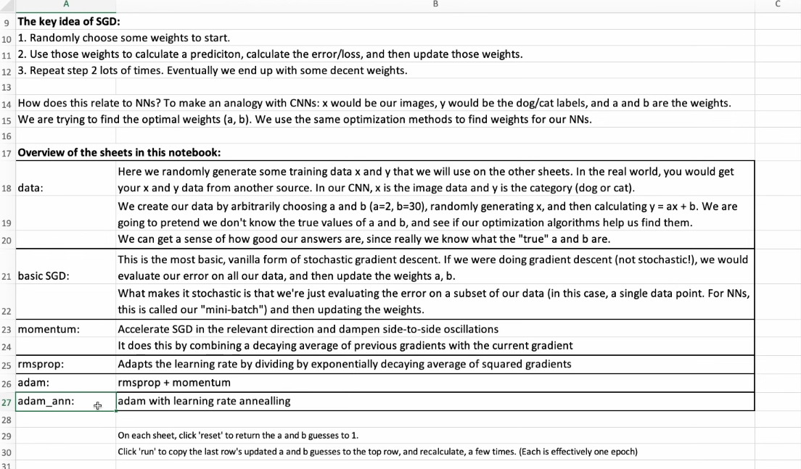
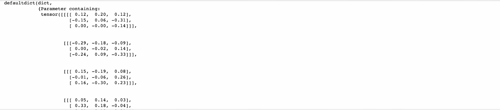
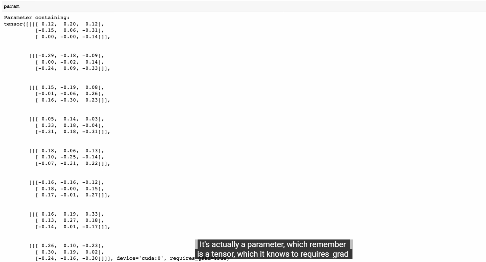
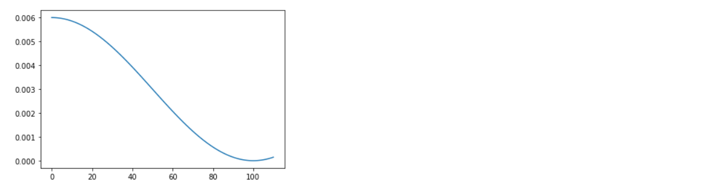

Accelerated SGD - Explained¶
What This Notebook Covers¶
This notebook explores optimizers - the algorithms that update neural network weights during training. We'll build several optimizers from scratch to understand how they work.
Why Optimizers Matter¶
The basic gradient descent update is:
weight = weight - learning_rate * gradient
But this simple approach has problems:
| Problem | Description |
|---|---|
| Slow convergence | Takes many steps to reach minimum |
| Oscillation | Bounces back and forth in steep dimensions |
| Stuck in saddle points | Gradient is zero but not at minimum |
| Same LR for all params | Some params need bigger/smaller updates |
Optimizers We'll Build¶
- SGD - Basic stochastic gradient descent with weight decay
- Momentum - Adds velocity to smooth out updates
- RMSProp - Adapts learning rate per parameter
- Adam - Combines momentum and adaptive learning rates
Learning Rate Schedulers¶
We'll also cover schedulers that change the learning rate during training:
- CosineAnnealingLR - Smooth cosine decay
- OneCycleLR - Fast training with super-convergence
Let's dive in!
Part 1: Setup and Imports¶
#|default_exp sgd
# This cell marks that code with #|export will be exported to miniai/sgd.py
#|export
import torch
# Import our custom modules from previous notebooks
from miniai.datasets import * # Data loading utilities
from miniai.conv import * # Convolution helpers
from miniai.learner import * # Learner class
from miniai.activations import * # Activation monitoring
from miniai.init import * # Weight initialization
# Standard library imports
import pickle, gzip, math, os, time, shutil
import matplotlib as mpl
import numpy as np
import matplotlib.pyplot as plt
# Fastcore utilities
import fastcore.all as fc
from collections.abc import Mapping
from pathlib import Path
from operator import attrgetter, itemgetter
from functools import partial
from copy import copy
from contextlib import contextmanager
# PyTorch imports
import torchvision.transforms.functional as TF
import torch.nn.functional as F
from torch import tensor, nn, optim
from torch.utils.data import DataLoader, default_collate
from torch.nn import init
from torch.optim import lr_scheduler # Learning rate schedulers
from torcheval.metrics import MulticlassAccuracy
from datasets import load_dataset, load_dataset_builder
# Our custom modules
from miniai.datasets import *
from miniai.conv import *
from miniai.learner import *
from miniai.activations import *
from miniai.init import *
from fastcore.test import test_close
# Configure PyTorch display
torch.set_printoptions(precision=2, linewidth=140, sci_mode=False)
torch.manual_seed(1)
# Disable logging warnings
import logging
logging.disable(logging.WARNING)
# Set seed for reproducibility
set_seed(42)
Part 2: Data Setup¶
We'll use Fashion MNIST with normalized inputs (as we learned in the previous notebook).
# Dataset configuration
xl, yl = 'image', 'label' # Column names
name = "fashion_mnist" # Dataset name
dsd = load_dataset(name) # Load from Hugging Face
# Batch size
bs = 1024
# Normalization constants (computed from dataset)
xmean, xstd = 0.28, 0.35
# Transform: convert to tensor and normalize
@inplace
def transformi(b):
b[xl] = [(TF.to_tensor(o) - xmean) / xstd for o in b[xl]]
# Create datasets and dataloaders
tds = dsd.with_transform(transformi)
dls = DataLoaders.from_dd(tds, bs, num_workers=4)
# Set up callbacks and model configuration
metrics = MetricsCB(accuracy=MulticlassAccuracy()) # Track accuracy
astats = ActivationStats(fc.risinstance(GeneralRelu)) # Monitor activations
# Standard callbacks for training
cbs = [DeviceCB(), metrics, ProgressCB(plot=True), astats]
# GeneralRelu with leak=0.1 and sub=0.4 (from previous notebook)
act_gr = partial(GeneralRelu, leak=0.1, sub=0.4)
# Kaiming init with correct leaky slope
iw = partial(init_weights, leaky=0.1)
# Callbacks for LR finder
lrf_cbs = [DeviceCB(), LRFinderCB()]
Part 3: Optimizers¶
An optimizer is responsible for updating model parameters based on gradients. All optimizers follow this basic pattern:
1. Compute gradients (via loss.backward())
2. Update parameters based on gradients
3. Zero out gradients for next iteration
🛠️ Interactive visualizations — one-time setup¶
The cells marked 🎮 Interactive below embed standalone HTML/JS visualizations
(stored in the interactive_viz/ folder next to this notebook) at full width and
~full viewport height. Run the next cell once, then run any 🎮 cell.
# ============================================================================
# INTERACTIVE VISUALIZATIONS -- setup (run this cell ONCE).
# Each "🎮 Interactive" cell below loads a standalone HTML file from the
# published copy on GitHub Pages, in an isolated <iframe> (its CSS/JS can't leak
# into the notebook). It is shown FULL WIDTH and auto-fits its content height.
# No local files needed -- the visualizations are read from GitHub.
# ============================================================================
from IPython.display import HTML
def show_viz(path, height="600px"):
"""Embed an interactive visualization full width; it auto-fits its height.
`path` may be a bare 'interactive_viz/<file>.html' (resolved to the GitHub
Pages copy) or a full https URL."""
base = "https://shammun.github.io/shammunul-fastai-notes/notebooks/"
if not path.startswith("http"):
path = base + path
return HTML(
f'<iframe src="{path}" loading="lazy" allowfullscreen '
f'style="width:100%;height:{height};border:1px solid #dde5f2;border-radius:12px;'
f'box-shadow:0 8px 24px rgba(123,92,214,.12);background:#fff;"></iframe>'
'<script>addEventListener("message",function(e){'
'if(e.data&&e.data.type==="ce-frame-height"&&e.data.height>50){'
'var fs=document.querySelectorAll("iframe");for(var i=0;i<fs.length;i++){'
'if(fs[i].contentWindow===e.source){fs[i].style.height=e.data.height+"px";break;}}}});</script>'
)

SGD (Stochastic Gradient Descent)¶
The simplest optimizer. Updates each parameter by subtracting the gradient scaled by the learning rate.
Update Rule: $$w_{t+1} = w_t - \eta \cdot \nabla L(w_t)$$
Where:
- $w_t$ = current weights
- $\eta$ = learning rate
- $\nabla L(w_t)$ = gradient of loss with respect to weights
class SGD:
"""
Stochastic Gradient Descent optimizer.
This is the simplest optimizer - it just subtracts the gradient
from each parameter, scaled by the learning rate.
Args:
params: Iterator of parameters to optimize (usually model.parameters())
lr: Learning rate - how big of a step to take
wd: Weight decay - L2 regularization strength (default: 0)
"""
def __init__(self, params, lr, wd=0.):
# Convert params iterator to list (so we can iterate multiple times)
params = list(params)
# fc.store_attr() stores all arguments as instance attributes
# equivalent to: self.params = params; self.lr = lr; self.wd = wd
fc.store_attr()
# Step counter (used by some optimizers for bias correction)
self.i = 0
def step(self):
"""
Perform one optimization step.
For each parameter:
1. Apply regularization (weight decay)
2. Apply optimization (gradient descent)
"""
# torch.no_grad() prevents gradient tracking for these operations
# We don't want to compute gradients of the update itself!
with torch.no_grad():
for p in self.params:
self.reg_step(p) # Regularization
self.opt_step(p) # Optimization
self.i += 1 # Increment step counter
def opt_step(self, p):
"""
The actual gradient descent update.
Formula: param = param - lr * gradient
The -= operator modifies p in place.
"""
p -= p.grad * self.lr
def reg_step(self, p):
"""
Apply weight decay (L2 regularization).
Formula: param = param * (1 - lr * wd)
This shrinks weights slightly each step, preventing them
from growing too large (helps prevent overfitting).
"""
if self.wd != 0:
p *= 1 - self.lr * self.wd
def zero_grad(self):
"""
Zero out all gradients.
Must be called before computing new gradients, because
PyTorch accumulates gradients by default.
"""
for p in self.params:
p.grad.data.zero_() # In-place zero
Regularization Followed by Optimization — Why and How?¶
The Code in Question¶
From the SGD class in 12_accel_sgd_explained.ipynb:
def step(self):
with torch.no_grad():
for p in self.params:
self.reg_step(p) # Step 1: Regularization (weight decay)
self.opt_step(p) # Step 2: Optimization (gradient descent)
self.i += 1
This raises three natural questions:
- What does each step actually do?
- Why are both needed?
- Why does regularization come before optimization?
What Each Step Does¶
reg_step — Regularization (Weight Decay)¶
def reg_step(self, p):
if self.wd != 0:
p *= 1 - self.lr * self.wd
This has nothing to do with gradients or the loss function. It simply shrinks every weight slightly toward zero by multiplying it by a factor just below 1.0.
Concrete example: If lr = 0.01 and wd = 0.01, then the decay factor is 1 - 0.01 × 0.01 = 0.9999. A weight of 5.0 becomes 5.0 × 0.9999 = 4.9995. It's a tiny nudge, but accumulated over thousands of steps, it prevents weights from growing unboundedly large.
Purpose: Capacity control. Large weights mean the model is memorizing noise in the training data. By constantly pulling weights toward zero, we force the model to only keep weights large if the gradient signal (from the data) is strong enough to push them back up.
opt_step — Optimization (Gradient Descent)¶
def opt_step(self, p):
p -= self.lr * p.grad
This is the actual learning step. The gradient p.grad tells us the direction in which the loss increases. We move the weight in the opposite direction (hence the minus sign), scaled by the learning rate.
Purpose: Minimize the loss function. Without this step, the model never learns anything from the data.
Why Both Steps Are Needed¶
| Regularization alone | Optimization alone | Both together | |
|---|---|---|---|
| What happens | All weights decay to zero | Weights fit training data, potentially overfitting | Weights learn from data while being kept small |
| Training loss | Increases (model forgets) | Decreases (model learns) | Decreases (model learns) |
| Test loss | Bad (underfitting) | Can be bad (overfitting) | Better (generalization) |
Think of it as two competing forces:
- Optimization pushes weights wherever the gradient says will reduce the loss — it doesn't care about weight magnitude.
- Regularization pulls weights toward zero — it doesn't care about the loss at all.
The balance between these two forces is what produces a model that learns the true signal (optimization) without memorizing noise (regularization). A weight stays large only if the gradient pressure from the data is strong enough to overcome the constant decay.
Why Regularization Comes Before Optimization¶
This ordering implements decoupled weight decay, the key idea behind AdamW (Loshchilov & Hutter, 2019). To understand why the order matters, let's compare two approaches.
Approach 1: Coupled (L2 Regularization — the old way)¶
In classical L2 regularization, we add a penalty term to the loss:
$$\mathcal{L}_{\text{total}} = \mathcal{L}_{\text{data}} + \frac{\lambda}{2} \|w\|^2$$Taking the gradient:
$$\nabla \mathcal{L}_{\text{total}} = \nabla \mathcal{L}_{\text{data}} + \lambda w$$The update becomes:
grad += wd * weight # regularization is INSIDE the gradient
weight -= lr * grad # single combined step
Problem: The regularization effect is now entangled with the gradient. In adaptive optimizers like Adam, the gradient gets divided by a running average of squared gradients. This means the weight decay penalty also gets divided by this term, effectively weakening regularization for parameters with large gradients. The regularization strength becomes dependent on the optimization dynamics — you can't tune them independently.
Approach 2: Decoupled Weight Decay (what our code does)¶
weight *= (1 - lr * wd) # Step 1: shrink directly, no gradient involved
weight -= lr * grad # Step 2: gradient update on the already-decayed weight
Advantage: The two operations are completely independent. The shrinkage applied in Step 1 is a fixed fraction of the current weight — it doesn't interact with gradient magnitudes, momentum buffers, or adaptive learning rate terms. This means:
- You can tune
wdandlrindependently - Weight decay behaves consistently regardless of the optimizer (SGD, Adam, RMSProp)
- The regularization effect doesn't get distorted by adaptive gradient scaling
Why Regularization Specifically Comes First¶
If we reversed the order (optimize then regularize), the decay would be applied to the already-updated weight:
# Hypothetical reversed order:
weight -= lr * grad # optimize first
weight *= (1 - lr * wd) # then decay the updated weight
This means the gradient update itself gets partially decayed in the same step it was applied. The decay is now acting on (old_weight - lr * grad) instead of just old_weight. The optimization step and the regularization step are no longer truly independent — the size of the gradient update affects how much regularization is applied, which re-introduces a subtle coupling.
By regularizing first, each operation targets a clean, well-defined quantity:
reg_stepsees the weight from the previous step and decays it →w' = w × (1 - lr × wd)opt_stepsees the decayed weight and applies the gradient →w'' = w' - lr × grad
The gradient update is applied to a weight that has already been regularized, keeping the two concerns cleanly separated.
Summary¶
┌─────────────────────────────────────────────────────────┐
│ optimizer.step() │
│ │
│ ┌──────────────────────┐ ┌────────────────────────┐ │
│ │ 1. reg_step (decay) │──▶│ 2. opt_step (gradient) │ │
│ │ │ │ │ │
│ │ Purpose: Prevent │ │ Purpose: Learn from │ │
│ │ overfitting │ │ data │ │
│ │ │ │ │ │
│ │ w *= (1 - lr * wd) │ │ w -= lr * grad │ │
│ │ │ │ │ │
│ │ Uses: NO gradients │ │ Uses: gradients only │ │
│ └──────────────────────┘ └────────────────────────┘ │
│ │
│ Order matters: decay first keeps the two operations │
│ independent (decoupled weight decay / AdamW style) │
└─────────────────────────────────────────────────────────┘
Key takeaway: Both steps are essential — regularization controls model complexity while optimization drives learning. Applying regularization first ensures the two mechanisms remain decoupled, making hyperparameter tuning cleaner and the regularization effect consistent across different optimizer variants.
# ============================================================================
# SGD (Stochastic Gradient Descent) Optimizer - Built from Scratch
# ============================================================================
# This class implements the most fundamental optimization algorithm used in
# deep learning. An "optimizer" is the algorithm that decides HOW to update
# the neural network's weights after we compute gradients via backpropagation.
#
# The core idea is simple:
# new_weight = old_weight - learning_rate * gradient
#
# Think of it like descending a mountain in fog:
# - You can only feel the slope right under your feet (the gradient)
# - You take a step downhill proportional to how steep it is
# - The learning_rate controls how big each step is
#
# "Stochastic" means we compute gradients on random mini-batches of data
# (not the entire dataset), which makes training faster but noisier.
# ============================================================================
class SGD:
"""
Stochastic Gradient Descent optimizer.
This is the simplest optimizer - it just subtracts the gradient
from each parameter, scaled by the learning rate.
Args:
params: Iterator of parameters to optimize (usually model.parameters())
lr: Learning rate - how big of a step to take
wd: Weight decay - L2 regularization strength (default: 0)
"""
# --------------------------------------------------------------------------
# __init__: Constructor - called when we create a new SGD instance
# --------------------------------------------------------------------------
# Usage example:
# optimizer = SGD(model.parameters(), lr=0.01, wd=0.001)
#
# Args:
# params: The model's trainable weights/biases. When you call
# model.parameters(), PyTorch returns a Python "iterator" -
# an object you can loop over ONCE to get each parameter tensor.
# lr: Learning rate - a small positive number (e.g., 0.01, 0.001).
# Controls how big each update step is.
# Too large = training explodes/diverges.
# Too small = training is painfully slow.
# wd: Weight decay strength (default 0.0 = no decay).
# This is a regularization technique that slightly shrinks
# weights toward zero each step, preventing overfitting.
# Typical values: 0.01, 0.001, 0.0001.
# --------------------------------------------------------------------------
def __init__(self, params, lr, wd=0.):
# Convert the params iterator into a Python list.
# WHY? An iterator can only be looped over ONCE - after that, it's
# "exhausted" (empty). But we need to loop over the parameters many
# times (once per training step). Converting to a list lets us
# iterate over them as many times as we want.
#
# Example:
# gen = model.parameters() # This is a one-time-use iterator/generator
# list(gen) # Now it's a reusable list of tensors
# # e.g., [weight1, bias1, weight2, bias2, ...]
params = list(params)
# fc.store_attr() is a convenience function from the fastcore library.
# It automatically takes ALL the arguments of this __init__ method
# (params, lr, wd) and stores them as attributes of 'self'.
#
# This single line is equivalent to writing all three of these:
# self.params = params # Store the list of parameter tensors
# self.lr = lr # Store the learning rate
# self.wd = wd # Store the weight decay value
#
# After this, we can access them anywhere in the class as:
# self.params, self.lr, self.wd
fc.store_attr()
# Initialize a step counter starting at 0.
# This counts how many optimization steps we've taken so far.
# Basic SGD doesn't use this, but child classes like Adam need it
# for "bias correction" (a mathematical fix for early training steps).
# We define it here in the parent class so all child classes inherit it.
self.i = 0
# --------------------------------------------------------------------------
# step(): Perform one complete optimization update
# --------------------------------------------------------------------------
# This is called once per training batch, AFTER loss.backward() has
# computed all the gradients. The typical training loop looks like:
#
# for batch in dataloader:
# predictions = model(batch) # Forward pass
# loss = loss_function(predictions) # Compute loss
# loss.backward() # Compute gradients (backprop)
# optimizer.step() # <-- THIS METHOD: update weights
# optimizer.zero_grad() # Clear gradients for next batch
# --------------------------------------------------------------------------
def step(self):
"""
Perform one optimization step.
For each parameter:
1. Apply regularization (weight decay)
2. Apply optimization (gradient descent)
"""
# torch.no_grad() creates a "context manager" (the 'with' block) that
# temporarily disables PyTorch's automatic gradient tracking.
#
# WHY IS THIS NECESSARY?
# PyTorch normally tracks every mathematical operation on tensors so it
# can later compute gradients via backpropagation. But here we're
# UPDATING the weights, not doing a forward pass. We don't want PyTorch
# to try to compute "gradients of the weight update" - that would:
# 1. Waste memory (storing unnecessary computation graph)
# 2. Waste time (tracking operations we don't need gradients for)
# 3. Potentially corrupt the actual gradients we need
#
# Everything inside this 'with' block runs without gradient tracking.
with torch.no_grad():
# Loop over every trainable parameter in the model.
# Each 'p' is a PyTorch tensor (e.g., a weight matrix or bias vector).
# A typical CNN might have dozens of parameter tensors:
# - Conv layer 1 weights (shape: [32, 1, 3, 3])
# - Conv layer 1 biases (shape: [32])
# - Conv layer 2 weights (shape: [64, 32, 3, 3])
# - ... and so on
for p in self.params:
# STEP 1: Apply regularization (weight decay)
# This slightly shrinks the parameter values toward zero.
# Done BEFORE the gradient step (this is "decoupled" weight decay).
self.reg_step(p)
# STEP 2: Apply the gradient descent update
# This moves the parameter in the direction that reduces the loss.
self.opt_step(p)
# After updating ALL parameters, increment the step counter.
# This tracks how many times step() has been called (i.e., how many
# batches we've processed). Used by Adam for bias correction.
self.i += 1
# --------------------------------------------------------------------------
# opt_step(): The core gradient descent update for a single parameter
# --------------------------------------------------------------------------
# This is the heart of the optimizer. For basic SGD, it's just:
# parameter = parameter - learning_rate * gradient
#
# This method is designed to be OVERRIDDEN by child classes (Momentum,
# RMSProp, Adam) to implement more sophisticated update rules.
#
# Args:
# p: A single parameter tensor (e.g., one weight matrix).
# After loss.backward(), p.grad contains the gradient of the loss
# with respect to this parameter.
# --------------------------------------------------------------------------
def opt_step(self, p):
"""
The actual gradient descent update.
Formula: param = param - lr * gradient
The -= operator modifies p in place.
"""
# This is the fundamental gradient descent equation:
# p = p - (learning_rate * gradient)
#
# WHAT DOES EACH PART MEAN?
# p.grad: The gradient - tells us the DIRECTION and MAGNITUDE of
# steepest increase in the loss. Computed by loss.backward().
# If p.grad is positive, increasing p would increase the loss,
# so we want to DECREASE p (hence the subtraction).
#
# self.lr: The learning rate - a scalar that controls step size.
# Multiplying the gradient by lr scales how big our update is.
#
# p -= ...: The -= operator modifies p IN PLACE (directly changes the
# tensor's values in memory). This is equivalent to:
# p.data = p.data - (p.grad * self.lr)
# We use in-place operations because:
# 1. We're inside torch.no_grad(), so it's safe
# 2. It's more memory-efficient (no temporary tensor)
# 3. The model's reference to this tensor still works
#
# EXAMPLE:
# If p = tensor([3.0, -1.0]) and p.grad = tensor([0.5, -0.2]) and lr = 0.1:
# p = [3.0, -1.0] - 0.1 * [0.5, -0.2]
# p = [3.0, -1.0] - [0.05, -0.02]
# p = [2.95, -0.98]
# The first weight decreased (gradient was positive = loss was increasing)
# The second weight increased (gradient was negative = loss was decreasing)
p -= p.grad * self.lr
# --------------------------------------------------------------------------
# reg_step(): Apply weight decay regularization to a single parameter
# --------------------------------------------------------------------------
# Weight decay is a regularization technique that prevents weights from
# growing too large, which helps prevent overfitting.
#
# INTUITION: Without regularization, some weights might grow very large to
# memorize the training data perfectly. By gently shrinking all weights
# toward zero each step, we encourage the model to find simpler solutions
# that generalize better to new data.
#
# NOTE: This implements "decoupled" weight decay (as in AdamW), NOT
# L2 regularization. The difference matters for adaptive optimizers like Adam:
# - Weight decay: param *= (1 - lr * wd) [shrink directly]
# - L2 regularization: grad += wd * param [add to gradient]
# For basic SGD these are mathematically equivalent, but for Adam they
# produce different results. Decoupled weight decay (used here) is
# generally considered better practice.
#
# Args:
# p: A single parameter tensor to regularize
# --------------------------------------------------------------------------
def reg_step(self, p):
"""
Apply weight decay (L2 regularization).
Formula: param = param * (1 - lr * wd)
This shrinks weights slightly each step, preventing them
from growing too large (helps prevent overfitting).
"""
# Only apply weight decay if wd is non-zero.
# WHY THIS CHECK? If wd=0 (the default), there's no regularization
# to apply. Skipping the multiplication saves computation and avoids
# any tiny floating-point rounding errors from multiplying by 1.0.
if self.wd != 0:
# Multiply every value in the parameter tensor by (1 - lr * wd).
# Since lr and wd are both small positive numbers, (1 - lr * wd)
# is a number very close to 1 but slightly less (e.g., 0.9999).
#
# This gently shrinks ALL weights toward zero by a tiny fraction
# at every step.
#
# EXAMPLE:
# If lr=0.01, wd=0.01:
# shrink_factor = 1 - 0.01 * 0.01 = 1 - 0.0001 = 0.9999
# A weight of 5.0 becomes: 5.0 * 0.9999 = 4.9995
# A weight of -3.0 becomes: -3.0 * 0.9999 = -2.9997
#
# Over many steps, this prevents weights from drifting too far
# from zero, unless the gradient signal is strong enough to
# push them there (meaning they're truly needed).
#
# The *= operator modifies p IN PLACE (same as p = p * value).
p *= 1 - self.lr * self.wd
# --------------------------------------------------------------------------
# zero_grad(): Clear all stored gradients
# --------------------------------------------------------------------------
# This MUST be called before computing new gradients (i.e., before
# loss.backward() on the next batch).
#
# WHY? PyTorch ACCUMULATES gradients by default. If you call
# loss.backward() twice without zeroing, the second call ADDS to the
# existing gradients rather than replacing them. This is occasionally
# useful (e.g., gradient accumulation for simulating larger batch sizes),
# but normally we want fresh gradients for each batch.
#
# Typical training loop:
# optimizer.zero_grad() # Clear old gradients
# loss = compute_loss(batch) # Forward pass
# loss.backward() # Compute NEW gradients
# optimizer.step() # Update weights using those gradients
# --------------------------------------------------------------------------
def zero_grad(self):
"""
Zero out all gradients.
Must be called before computing new gradients, because
PyTorch accumulates gradients by default.
"""
# Loop over every parameter in the model
for p in self.params:
# Set all values in this parameter's gradient tensor to zero.
#
# BREAKDOWN OF p.grad.data.zero_():
#
# p.grad: The gradient tensor stored on this parameter.
# After loss.backward(), this holds ∂loss/∂p.
# Same shape as p itself.
#
# .data: Accesses the raw tensor data WITHOUT gradient
# tracking. We use .data here to ensure this
# zeroing operation isn't recorded in PyTorch's
# computation graph (we don't need gradients of
# the zeroing operation itself).
#
# .zero_(): An IN-PLACE operation (indicated by the trailing
# underscore '_', a PyTorch convention) that sets
# every element in the tensor to 0.0.
# In-place means it modifies the existing tensor
# rather than creating a new one (saves memory).
#
# After this, p.grad is a tensor of all zeros, ready for the
# next call to loss.backward() to fill in fresh gradient values.
p.grad.data.zero_()
Weight Decay vs L2 Regularization¶
These are often confused but are slightly different:
Weight Decay (what we implemented):
weight -= lr * wd * weight # Shrink weights directly
# or equivalently:
weight *= 1 - lr * wd
L2 Regularization (adds to gradient):
weight.grad += wd * weight # Add penalty to gradient
For basic SGD these are equivalent, but for Adam they behave differently! AdamW uses proper weight decay, which works better.
🎮 Interactive: anatomy of one SGD step — with weight decay¶
One opt.step(), dissected on a live loss curve. A single weight walks downhill while you watch reg_step and opt_step fire in order.
What to try
- Click the stage chips — ⓪ gradients → ① reg_step → ② opt_step → ③ zero_grad — each highlights the matching lines of the
SGDclass. - Press ▶ Play and let it loop: every cycle is one mini-batch, and the hops shrink as the slope flattens.
- Set wd = 0.1 or 0.3 and watch the ball settle at the dashed teal line, not the loss minimum — weight decay literally moves the optimum.
- The curve's curvature is 1, so overshoot starts past lr = 1 and divergence past lr = 2: try 1.5 (bouncing), then 2.1 (bounces grow until it slams the edges).
# ============================================================================
# INTERACTIVE -- run this cell. It loads ./interactive_viz/sgd_step_anatomy.html
# at full width, sized to fit the visualization (setup cell near the top required).
# Keep the 'interactive_viz' folder in the SAME directory as this notebook.
# ============================================================================
show_viz("interactive_viz/sgd_step_anatomy.html", height="760px")
# Train with our SGD optimizer
set_seed(42)
model = get_model(act_gr, norm=nn.BatchNorm2d).apply(iw)
# TrainLearner uses opt_func to create the optimizer
# We pass our SGD class (not an instance)
learn = TrainLearner(model, dls, F.cross_entropy, lr=0.4, cbs=cbs, opt_func=SGD)
# Train for 3 epochs
learn.fit(3)
Part 4: Momentum¶
Basic SGD can oscillate when the loss surface has different curvatures in different directions. Momentum smooths out these oscillations by maintaining a "velocity" that accumulates over time.
Intuition: Rolling Ball¶
Imagine a ball rolling down a hill:
- Without momentum: Ball moves directly downhill, can oscillate in valleys
- With momentum: Ball builds up speed, smoothly rolls through valleys
Exponential Moving Average¶
Momentum uses an exponential moving average (EMA) of gradients:
$$v_t = \beta \cdot v_{t-1} + (1-\beta) \cdot g_t$$$$w_{t+1} = w_t - \eta \cdot v_t$$Where:
- $v_t$ = velocity (accumulated gradient)
- $\beta$ = momentum coefficient (typically 0.9)
- $g_t$ = current gradient
Momentum — Explained¶
The Problem Momentum Solves¶
With plain SGD, the update at each step depends only on the current batch's gradient:
weight -= lr * gradient
This creates two problems:
Noisy gradients: Each mini-batch gives a slightly different gradient. The updates jitter around, wasting steps on noise rather than making consistent progress toward the minimum.
Oscillation in narrow valleys: If the loss surface is steep in one direction and shallow in another (like a narrow ravine), SGD bounces back and forth across the steep walls while making slow progress along the shallow floor.
Without Momentum: With Momentum:
↗ ↙ ↗ ↙ →→→→→
↗ ↙ ↗ →→→→→→
↗ ↙ →→→→→→→
(oscillates) (smooth progress)
Momentum fixes both problems by replacing the raw gradient with a smoothed running average of recent gradients.
The Core Idea: Exponential Moving Average (EMA)¶
Before understanding momentum, we need to understand EMA — the mathematical tool it relies on.
Given a noisy sequence of values $y_1, y_2, y_3, \ldots$, the exponential moving average is:
$$\text{avg}_t = \beta \cdot \text{avg}_{t-1} + (1 - \beta) \cdot y_t$$Where $\beta$ controls how much smoothing is applied:
| $\beta$ | Behavior |
|---|---|
| 0.5 | Responds quickly, still noisy |
| 0.7 | Moderate smoothing |
| 0.9 | Very smooth — most common choice |
| 0.99 | Extremely smooth but slow to react to changes |
How to read the formula: The new average is a weighted blend of the old average ($\beta$ weight) and the new observation ($(1-\beta)$ weight). With $\beta = 0.9$, the average is 90% memory and 10% new data. This means each new observation nudges the average a little, but sudden spikes or noise get dampened.
How far back does EMA look? The effective window is approximately $\frac{1}{1-\beta}$ steps. So $\beta = 0.9$ averages roughly over the last 10 gradients, and $\beta = 0.99$ averages over the last 100.
EMA Visualization (from the notebook)¶
The notebook plots EMA at different $\beta$ values over noisy parabolic data:
avg = 0
for yi in ys:
avg = beta * avg + (1 - beta) * yi # EMA formula
res.append(avg)
At $\beta = 0.5$, the red smoothed line still follows the noise closely. At $\beta = 0.9$, it traces the true underlying curve cleanly. At $\beta = 0.99$, it's so smooth it lags behind and misses the shape. The sweet spot for optimizers is typically $\beta = 0.9$.
How Momentum Uses EMA¶
The Momentum optimizer applies EMA to the gradients instead of using them raw:
$$v_t = \beta \cdot v_{t-1} + (1 - \beta) \cdot g_t$$$$w_{t+1} = w_t - \eta \cdot v_t$$Where:
- $v_t$ = velocity (the EMA of gradients) — this is the "momentum"
- $\beta$ = momentum coefficient (typically 0.9)
- $g_t$ = current gradient from this batch
- $\eta$ = learning rate
Instead of stepping in the direction of this batch's gradient, we step in the direction of the smoothed gradient — the accumulated trend.
The Code¶
class Momentum(SGD):
def __init__(self, params, lr, wd=0., mom=0.9):
super().__init__(params, lr=lr, wd=wd)
self.mom = mom
def opt_step(self, p):
# Initialize velocity to zeros on first step
if not hasattr(p, 'grad_avg'):
p.grad_avg = torch.zeros_like(p.grad)
# EMA update: blend old velocity with new gradient
p.grad_avg = p.grad_avg * self.mom + p.grad * (1 - self.mom)
# Step using smoothed gradient instead of raw gradient
p -= self.lr * p.grad_avg
Line-by-line breakdown¶
class Momentum(SGD) — Inherits from SGD, so it gets reg_step (weight decay) and the step() loop for free. Only opt_step is overridden.
if not hasattr(p, 'grad_avg') — On the very first optimization step, we need to create the velocity buffer. It's stored directly on the parameter tensor as an attribute (p.grad_avg), so each parameter has its own independent velocity. Initialized to zeros because we have no history yet.
p.grad_avg = p.grad_avg * self.mom + p.grad * (1 - self.mom) — This is the EMA formula. With mom=0.9:
- 90% of the velocity comes from accumulated history
- 10% comes from the current gradient
- This means a single noisy gradient only has 10% influence on the update direction
p -= self.lr * p.grad_avg — We update the weight using the smoothed velocity, not the raw gradient.
Why Momentum Helps: Two Mechanisms¶
1. Noise Reduction¶
Each mini-batch gradient is a noisy estimate of the true gradient (the gradient you'd get by computing over the entire dataset). By averaging many recent gradients, momentum gets closer to the true gradient direction.
Analogy: Imagine asking 10 people for directions. Each person gives a slightly different answer (noise), but if you average all their answers, you get a much more reliable direction than asking just one person.
2. Acceleration in Consistent Directions¶
When gradients consistently point in the same direction across steps, the velocities accumulate and the effective step size grows. When gradients oscillate (pointing left, then right, then left), the opposing signals cancel out and the effective step size shrinks.
Numerical example with $\beta = 0.9$:
Suppose the gradient in the x-direction is consistently +1.0 every step, and in the y-direction it alternates between +1.0 and -1.0.
After many steps, the x-velocity converges to:
$$v_x = (1-\beta) \cdot g_x \cdot \frac{1}{1-\beta} = g_x = 1.0$$But the y-velocity oscillates around:
$$v_y \approx (1-\beta) \cdot g_y = 0.1 \times (\pm 1.0) \approx \pm 0.1$$The consistent x-direction gets a full update of 1.0, while the oscillating y-direction gets damped to ±0.1. The optimizer automatically accelerates along the ravine floor and suppresses the bouncing across the walls.
3. Escaping Local Minima and Saddle Points¶
Because velocity accumulates, the optimizer can "roll through" shallow local minima and flat saddle points where the gradient is near zero. A ball with momentum doesn't stop the instant the slope flattens — it keeps going. Similarly, the accumulated velocity carries the parameters past points where a zero gradient would stall plain SGD.
Practical Impact: Higher Learning Rates¶
The notebook demonstrates a direct consequence of momentum's smoothing:
# Plain SGD — limited to lr=0.4
learn = TrainLearner(model, dls, F.cross_entropy, lr=0.4, opt_func=SGD)
# Momentum — can use lr=1.5 (almost 4x higher!)
learn = TrainLearner(model, dls, F.cross_entropy, lr=1.5, opt_func=Momentum)
Because momentum damps oscillations, the optimizer can tolerate much larger learning rates without diverging. Larger learning rates mean bigger steps per iteration, which means faster convergence. This is the main practical benefit — momentum doesn't just smooth the path, it lets you run faster.
How Momentum Connects to the Rest of the Notebook¶
Momentum is the first building block beyond plain SGD. The subsequent optimizers in the notebook build on top of it:
SGD
│
├── Momentum ──── Adds EMA of gradients (1st moment)
│ ↓
├── RMSProp ──── Adds EMA of squared gradients (2nd moment)
│ ↓
└── Adam ──── Combines Momentum + RMSProp + bias correction
- RMSProp uses a similar EMA, but on squared gradients. It adapts the learning rate per-parameter — parameters with large gradients get smaller updates, and vice versa.
- Adam literally combines the momentum velocity ($v_t$, the EMA of gradients) with the RMSProp scaling ($s_t$, the EMA of squared gradients), plus adds bias correction to fix the early-step underestimation caused by initializing both to zero.
So understanding momentum's EMA is the key insight — once you grasp it, RMSProp and Adam are straightforward extensions of the same idea applied to different quantities.
Summary¶
| Aspect | Plain SGD | SGD + Momentum |
|---|---|---|
| Update uses | Current gradient only | EMA of recent gradients |
| Noise handling | Fully exposed to batch noise | Smoothed out |
| Oscillation | Bounces in narrow valleys | Damped automatically |
| Saddle points | Can get stuck (zero gradient) | Rolls through on accumulated velocity |
| Typical learning rate | Lower (e.g., 0.4) | Higher (e.g., 1.5) |
| State per parameter | None | One buffer (grad_avg) |
| Key hyperparameter | — | mom (typically 0.9) |
The one-sentence version: Momentum replaces each step's noisy gradient with a smoothed trend line of recent gradients, which damps oscillations, allows higher learning rates, and accelerates convergence in consistent directions.
Visualizing Exponential Moving Average¶
Let's see how different $\beta$ values affect smoothing.
# Create noisy data
xs = torch.linspace(-4, 4, 100) # x values from -4 to 4
ys = 1 - (xs/3) ** 2 + torch.randn(100) * 0.1 # Parabola with noise
# Plot EMA with different beta values
_, axs = plt.subplots(2, 2, figsize=(12, 8))
betas = [0.5, 0.7, 0.9, 0.99] # Different momentum values
for beta, ax in zip(betas, axs.flatten()):
ax.scatter(xs, ys, alpha=0.5) # Plot raw noisy data
# Compute exponential moving average
avg = 0 # Initialize average
res = [] # Store results
for yi in ys:
# EMA formula: new_avg = beta * old_avg + (1-beta) * new_value
avg = beta * avg + (1 - beta) * yi
res.append(avg)
ax.plot(xs, np.array(res), color='red', linewidth=2) # Plot smoothed
ax.set_title(f'beta={beta}')
plt.tight_layout()
What we see:
| Beta | Effect |
|---|---|
| 0.5 | Responds quickly but still noisy |
| 0.7 | Moderate smoothing |
| 0.9 | Very smooth (most common choice) |
| 0.99 | Extremely smooth but slow to respond |
Higher $\beta$ = more smoothing = slower response to changes.
class Momentum(SGD):
"""
SGD with Momentum.
Instead of using the raw gradient, we use an exponential moving
average of gradients. This smooths out noisy gradients and helps
accelerate in consistent directions.
Args:
params: Parameters to optimize
lr: Learning rate
wd: Weight decay (default: 0)
mom: Momentum coefficient (default: 0.9)
"""
def __init__(self, params, lr, wd=0., mom=0.9):
# Call parent class __init__
super().__init__(params, lr=lr, wd=wd)
self.mom = mom # Store momentum coefficient
def opt_step(self, p):
"""
Optimization step with momentum.
Algorithm:
1. If first time, initialize grad_avg to zeros
2. Update grad_avg with EMA: grad_avg = mom*grad_avg + (1-mom)*grad
3. Update param using grad_avg instead of raw grad
"""
# Initialize gradient average if not exists
# We store it as an attribute on the parameter tensor itself
if not hasattr(p, 'grad_avg'):
p.grad_avg = torch.zeros_like(p.grad)
# Update exponential moving average of gradients
# grad_avg = momentum * old_avg + (1-momentum) * new_gradient
p.grad_avg = p.grad_avg * self.mom + p.grad * (1 - self.mom)
# Update parameters using the averaged gradient
p -= self.lr * p.grad_avg
Why Momentum Helps¶
Without Momentum: With Momentum:
↗ ↙ ↗ ↙ →→→→→
↗ ↙ ↗ →→→→→→
↗ ↙ →→→→→→→
(oscillates) (smooth progress)
Momentum averages out the oscillations while preserving the consistent downhill direction.
🎮 Interactive: momentum & EMA lab — kill the zigzag¶
The EMA formula and the ravine problem, side by side and live.
What to try
- Walk the rail ⓪→③: the matching lines of the
Momentumclass light up on the right. - Drag β: watch the purple EMA get smoother (and laggier) on the noisy signal.
- Press Race ▶: SGD (orange) zigzags wall-to-wall while Momentum (purple) glides along the ravine floor.
- The default lr = 0.13 sits just under SGD's stability limit (2/15 ≈ 0.133). Slide to 0.15 and race again — SGD diverges, Momentum survives. That's why the notebook trains at lr = 1.5 with momentum vs 0.4 without.
# ============================================================================
# INTERACTIVE -- run this cell. It loads ./interactive_viz/momentum_ema_lab.html
# at full width, sized to fit the visualization (setup cell near the top required).
# Keep the 'interactive_viz' folder in the SAME directory as this notebook.
# ============================================================================
show_viz("interactive_viz/momentum_ema_lab.html", height="780px")
# Train with Momentum optimizer
# Notice we can use a HIGHER learning rate (1.5 vs 0.4)!
set_seed(42)
model = get_model(act_gr, norm=nn.BatchNorm2d).apply(iw)
learn = TrainLearner(model, dls, F.cross_entropy, lr=1.5, cbs=cbs, opt_func=Momentum)
learn.fit(3)
# Check activation statistics
astats.color_dim()
With momentum, we can use a much higher learning rate (1.5 vs 0.4) and still train stably!
Part 5: RMSProp¶
RMSProp (Root Mean Square Propagation) addresses a different problem: different parameters may need different learning rates.
The Problem¶
Some parameters have:
- Large gradients → need smaller updates
- Small gradients → need larger updates
The Solution: Adaptive Learning Rate¶
RMSProp divides the learning rate by a running average of gradient magnitudes:
$$s_t = \beta \cdot s_{t-1} + (1-\beta) \cdot g_t^2$$$$w_{t+1} = w_t - \frac{\eta}{\sqrt{s_t} + \epsilon} \cdot g_t$$Where:
- $s_t$ = running average of squared gradients
- $\beta$ = smoothing coefficient (typically 0.99)
- $\epsilon$ = small constant for numerical stability
class RMSProp(SGD):
"""
RMSProp optimizer.
Adapts the learning rate for each parameter based on the
magnitude of its recent gradients. Parameters with large
gradients get smaller effective learning rates.
Args:
params: Parameters to optimize
lr: Base learning rate
wd: Weight decay (default: 0)
sqr_mom: Momentum for squared gradient average (default: 0.99)
eps: Small constant for numerical stability (default: 1e-5)
"""
def __init__(self, params, lr, wd=0., sqr_mom=0.99, eps=1e-5):
super().__init__(params, lr=lr, wd=wd)
self.sqr_mom = sqr_mom # Momentum for squared gradients
self.eps = eps # Numerical stability constant
def opt_step(self, p):
"""
RMSProp optimization step.
Algorithm:
1. Initialize sqr_avg with current gradient squared
2. Update sqr_avg with exponential moving average (EMA) of squared gradients
3. Divide gradient by sqrt(sqr_avg) before applying
This normalizes updates - large gradients are scaled down,
small gradients are scaled up.
"""
# Initialize squared gradient average on first step
if not hasattr(p, 'sqr_avg'):
p.sqr_avg = p.grad ** 2 # Initialize with current gradient squared
# Update exponential moving average of squared gradients
# sqr_avg = sqr_mom * sqr_avg + (1-sqr_mom) * gradient^2
p.sqr_avg = p.sqr_avg * self.sqr_mom + p.grad ** 2 * (1 - self.sqr_mom)
# For momentum, we used the moving average of the gradients
# For RMSProp, we use the moving average of the squared gradients
# Update parameter with adaptive learning rate
# The gradient is divided by sqrt(sqr_avg), normalizing it
# eps prevents division by zero
p -= self.lr * p.grad / (p.sqr_avg.sqrt() + self.eps)
# We are dividing by the variance of the gradients
# This is like dividing by the standard deviation of the gradients
# So we are normalizing the gradients
# Then we are subtracting the normalized gradient from the parameter
# This is like SGD but with adaptive learning rates
# The learning rate is adjusted based on the variance of the gradients
Why RMSProp Works¶
Parameter A: Large gradients (10, 12, 8, 11, ...)
sqr_avg ≈ 100
effective_lr = lr / sqrt(100) = lr / 10 (smaller steps)
Parameter B: Small gradients (0.1, 0.2, 0.1, 0.15, ...)
sqr_avg ≈ 0.02
effective_lr = lr / sqrt(0.02) = lr * 7 (larger steps)
This helps parameters with small gradients "catch up" to parameters with large gradients.
🎮 Interactive: RMSProp — a learning rate per parameter¶
Exactly the Parameter A / Parameter B story above, running live.
What to try
- Watch the top bars: with one lr, the steep parameter's SGD step is far larger than the gentle one's. RMSProp's steps come out nearly equal.
- Press Race ▶ and compare paths: SGD zigzags/crawls, RMSProp cuts almost diagonally to the minimum.
- Check the teal effective lr readouts — this is
lr / (√sqr_avg + eps)per axis, updating live. - Stage ① explains the notebook's subtle trick:
sqr_avgis initialized withgrad**2, not zeros — see what disaster that avoids.
# ============================================================================
# INTERACTIVE -- run this cell. It loads ./interactive_viz/rmsprop_adaptive_lr.html
# at full width, sized to fit the visualization (setup cell near the top required).
# Keep the 'interactive_viz' folder in the SAME directory as this notebook.
# ============================================================================
show_viz("interactive_viz/rmsprop_adaptive_lr.html", height="780px")
# Train with RMSProp
# Note: RMSProp typically uses MUCH smaller learning rates
set_seed(42)
model = get_model(act_gr, norm=nn.BatchNorm2d).apply(iw)
learn = TrainLearner(model, dls, F.cross_entropy, lr=3e-3, cbs=cbs, opt_func=RMSProp)
learn.fit(3)
astats.color_dim()
Part 6: Adam¶
Adam (Adaptive Moment Estimation) combines the best of both worlds:
- Momentum (first moment) for smooth gradients
- RMSProp (second moment) for adaptive learning rates
Adam Update Rules¶
$$m_t = \beta_1 \cdot m_{t-1} + (1-\beta_1) \cdot g_t \quad \text{(momentum)}$$$$v_t = \beta_2 \cdot v_{t-1} + (1-\beta_2) \cdot g_t^2 \quad \text{(RMSProp)}$$Bias Correction¶
Since $m_t$ and $v_t$ are initialized to zero, they're biased toward zero in early steps. We correct this:
$$\hat{m}_t = \frac{m_t}{1 - \beta_1^t}$$$$\hat{v}_t = \frac{v_t}{1 - \beta_2^t}$$Final Update¶
$$w_{t+1} = w_t - \frac{\eta}{\sqrt{\hat{v}_t} + \epsilon} \cdot \hat{m}_t$$class Adam(SGD):
"""
Adam optimizer.
Combines momentum (first moment) and RMSProp (second moment)
with bias correction for both.
Args:
params: Parameters to optimize
lr: Learning rate
wd: Weight decay (default: 0)
beta1: Momentum coefficient (default: 0.9)
beta2: Squared gradient momentum (default: 0.99)
eps: Numerical stability constant (default: 1e-5)
"""
def __init__(self, params, lr, wd=0., beta1=0.9, beta2=0.99, eps=1e-5):
super().__init__(params, lr=lr, wd=wd)
self.beta1 = beta1 # Momentum coefficient
self.beta2 = beta2 # Squared gradient coefficient
self.eps = eps # Numerical stability
def opt_step(self, p):
"""
Adam optimization step.
Algorithm:
1. Update first moment (momentum): avg = beta1*avg + (1-beta1)*grad
2. Bias correct first moment: unbias_avg = avg / (1 - beta1^t)
3. Update second moment (RMSProp): sqr_avg = beta2*sqr_avg + (1-beta2)*grad^2
4. Bias correct second moment: unbias_sqr_avg = sqr_avg / (1 - beta2^t)
5. Update: param -= lr * unbias_avg / sqrt(unbias_sqr_avg)
"""
# Initialize first moment (momentum) if not exists
if not hasattr(p, 'avg'):
p.avg = torch.zeros_like(p.grad.data)
# Initialize second moment (squared gradients) if not exists
if not hasattr(p, 'sqr_avg'):
p.sqr_avg = torch.zeros_like(p.grad.data)
# Update first moment (momentum)
p.avg = self.beta1 * p.avg + (1 - self.beta1) * p.grad
# Bias correction for first moment
# At step i, the bias is (1 - beta1^(i+1))
# self.i is the step count from parent class
unbias_avg = p.avg / (1 - (self.beta1 ** (self.i + 1)))
# Update second moment (squared gradients)
p.sqr_avg = self.beta2 * p.sqr_avg + (1 - self.beta2) * (p.grad ** 2)
# Bias correction for second moment
unbias_sqr_avg = p.sqr_avg / (1 - (self.beta2 ** (self.i + 1)))
# Update parameters
# Uses bias-corrected momentum divided by sqrt of bias-corrected squared average
p -= self.lr * unbias_avg / (unbias_sqr_avg + self.eps).sqrt()
Why Bias Correction?¶
Without bias correction (early steps):
Step 1: avg = 0.9*0 + 0.1*grad = 0.1*grad (too small!)
Step 2: avg = 0.9*0.1*grad + 0.1*grad = 0.19*grad (still small)
With bias correction:
Step 1: unbias_avg = 0.1*grad / (1-0.9^1) = 0.1*grad / 0.1 = grad (correct!)
Step 2: unbias_avg = 0.19*grad / (1-0.9^2) = 0.19*grad / 0.19 = grad (correct!)
Bias correction ensures the moving average estimates are unbiased from the start.
🎮 Interactive: Adam's bias correction — why ÷(1 − βᵗ)¶
The table above ("Step 1: avg = 0.1·grad") turned into a scrubbable experiment.
What to try
- Drag the t slider: the raw EMA (orange) reads only 10% of the true gradient at t=1; the corrected estimate (teal) is exact from step 1.
- Flip the β chip to 0.99 (Adam's second moment): the needed correction starts at ×100 — and that buffer sits in a denominator.
- Walk the rail: stages ①–④ highlight the exact lines of the
Adamclass, including whereself.i(the step counter fromSGD) enters. - Press ▶ Play to run stages then auto-sweep t.
# ============================================================================
# INTERACTIVE -- run this cell. It loads ./interactive_viz/adam_bias_correction.html
# at full width, sized to fit the visualization (setup cell near the top required).
# Keep the 'interactive_viz' folder in the SAME directory as this notebook.
# ============================================================================
show_viz("interactive_viz/adam_bias_correction.html", height="800px")
# Train with Adam
set_seed(42)
model = get_model(act_gr, norm=nn.BatchNorm2d).apply(iw)
learn = TrainLearner(model, dls, F.cross_entropy, lr=6e-3, cbs=cbs, opt_func=Adam)
learn.fit(3)
Optimizer Comparison¶
| Optimizer | Learning Rate | Key Feature |
|---|---|---|
| SGD | 0.4 | Simple, baseline |
| Momentum | 1.5 | Smooth updates, higher LR |
| RMSProp | 0.003 | Adaptive per-parameter LR |
| Adam | 0.006 | Best of both worlds |
🎮 Interactive: the optimizer race — in 3D¶
All four optimizers from this notebook on the same loss surface, same lr. Surface height = loss; everyone starts on the orange ring, the goal is the teal ring.
What to try
- Press Race ▶ on the Ravine — this is the comparison table above, animated. The log-scale loss chart below the surface shows who's winning at a glance, and the leaderboard ranks runners live (🥇🥈🥉).
- Drag to rotate / scroll to zoom, or use the ¾ / Top / Side view buttons — the Top view makes SGD's zigzag unmistakable.
- Switch to Saddle: adaptive methods amplify the near-zero ridge gradients and slide off first; toggle gradient noise to see mini-batch noise help everyone escape.
- Try Banana valley: momentum overshoots the bends, Adam re-aims each turn — rankings depend on the landscape. Click legend names to hide/show runners; drag the lr slider and note SGD needs retuning per surface while RMSProp/Adam barely care.
# ============================================================================
# INTERACTIVE -- run this cell. It loads ./interactive_viz/optimizer_race_3d.html
# at full width, sized to fit the visualization (setup cell near the top required).
# Keep the 'interactive_viz' folder in the SAME directory as this notebook.
# ============================================================================
show_viz("interactive_viz/optimizer_race_3d.html", height="940px")
Part 7: Learning Rate Schedulers¶
The learning rate doesn't have to be constant! Schedulers adjust the learning rate during training.
Why Use Schedulers?¶
- High LR early: Fast progress, explore broadly
- Low LR late: Fine-tune, converge precisely
PyTorch Schedulers¶
PyTorch provides many built-in schedulers in torch.optim.lr_scheduler.
# List all available schedulers (classes that start with uppercase)
' '.join(o for o in dir(lr_scheduler) if o[0].isupper() and o[1].islower())
Common schedulers:
| Scheduler | Description |
|---|---|
| StepLR | Reduce LR by factor every N epochs |
| ExponentialLR | Multiply LR by gamma each epoch |
| CosineAnnealingLR | Cosine decay to minimum LR |
| OneCycleLR | 1cycle policy for super-convergence |
# Alternative way to filter (using filter and lambda)
' '.join(filter(lambda x: x[0].isupper() and x[1].islower(), dir(lr_scheduler)))
Exploring the Optimizer¶
Let's look at how PyTorch optimizers store state.
# Create a simple learner to explore optimizer structure
learn = TrainLearner(get_model(), dls, F.cross_entropy, lr=6e-3, cbs=[DeviceCB(), SingleBatchCB()])
learn.fit(1) # Train for 1 batch
# Get the optimizer
opt = learn.opt
# List optimizer attributes (excluding private ones starting with _)
' '.join(o for o in dir(opt) if o[0] != '_')
Optimizer Creation vs Execution — and What learn.opt Actually Is¶
Question 1: Does This Line Run the Optimizer?¶
if self.opt_func: self.opt = self.opt_func(self.model.parameters(), lr)
No — this creates the optimizer, it doesn't run it. It's calling the optimizer class as a constructor. For example, if self.opt_func = SGD, then this becomes:
self.opt = SGD(model.parameters(), lr=0.01)
This builds the optimizer object and stores it in self.opt. No weights are updated yet. The optimizer actually runs later, inside the training loop, when self.step() is called — which triggers self.opt.step().
The Full Sequence During learn.fit()¶
self.opt = self.opt_func(model.parameters(), lr) ← CREATE optimizer (just once)
│
└── for each epoch:
for each batch:
self.predict() ← forward pass
self.get_loss() ← compute loss
self.backward() ← compute gradients (loss.backward())
self.step() ← self.opt.step() — THIS runs the optimizer
self.zero_grad() ← clear gradients for next batch
The self.opt_func line happens once at the start of fit(). The actual optimization — weight decay, EMA updates, gradient steps — happens inside self.opt.step(), which is called once per batch, potentially thousands of times during training.
Creation vs Execution — An Analogy¶
Think of it like hiring a worker vs the worker doing the job:
self.opt = self.opt_func(model.parameters(), lr) # Hire the worker (create)
# ... later, in the training loop ...
self.opt.step() # Worker does one unit of work (execute)
self.opt.step() # Worker does another unit of work
self.opt.step() # And another...
Question 2: What Is learn.opt After Training?¶
learn = TrainLearner(get_model(), dls, F.cross_entropy, lr=6e-3,
cbs=[DeviceCB(), SingleBatchCB()])
learn.fit(1)
opt = learn.opt
learn.opt is the optimizer object instance — not a function name, and not a "result" of optimization. It's the living optimizer that was created during fit() and used throughout training.
Since TrainLearner defaults to opt_func=optim.SGD, learn.opt is an instance of torch.optim.SGD.
What's Inside This Object¶
The optimizer object holds state that persists across steps:
| What it stores | Example |
|---|---|
| Parameter references | Pointers to all the model's weight tensors |
| Learning rate | lr=6e-3 |
| Weight decay | wd value |
| Internal buffers (for Momentum/Adam) | Velocity (grad_avg), squared gradient averages (sqr_avg) |
| Step counter | How many .step() calls have been made |
After fit(1) completes, all that accumulated state is still inside learn.opt. That's why the notebook grabs it with opt = learn.opt — so you can inspect the optimizer's internals after training, like checking the learning rate, parameter groups, or buffer values.
The Lifecycle of learn.opt¶
learn = TrainLearner(...) # learn.opt doesn't exist yet
│
learn.fit(1)
│
├── self.opt = self.opt_func( # learn.opt is CREATED here
│ model.parameters(), lr)
│
├── training loop runs... # learn.opt.step() called each batch
│ # internal state accumulates
│
└── fit() returns # learn.opt still exists with all its state
│
opt = learn.opt # grab the optimizer object for inspection
What opt Is NOT¶
- It is not the optimizer function/class (that's
self.opt_func, e.g.,SGD) - It is not the "result" of optimization (the results are the updated model weights, which live in
learn.model) - It is the optimizer instance with all its configuration and accumulated state
'add_param_group defaults load_state_dict param_groups state state_dict step zero_grad'
# Print the optimizer
opt
"""
SGD (
Parameter Group 0
dampening: 0
differentiable: False
foreach: None
lr: 0.006
maximize: False
momentum: 0
nesterov: False
weight_decay: 0
)
"""
# Get the state for a specific parameter
param = next(iter(learn.model.parameters())) # First parameter
"""
learn.model.parameters() is a generator
iter(learn.model.parameters()) turns it into an iterator
next(iter(learn.model.parameters())) allows to look at value of iterator or the first parameter
"""
# Check the state of the optimizer
st = opt.state[param] # State dictionary for this parameter
"""
state is a dictionary and the keys are parameter tensors
So, here tensors are used as keys for the dictionary state
"""
# View the state
st # Shows step count and any stored tensors (momentum, etc.)
{'momentum_buffer': None}
opt.state

param

# Number of parameter groups
len(opt.param_groups)
# Get the first param group
pg = opt.param_groups[0]
# List keys in param group
list(pg)
The param group contains:
params: List of parameters in this grouplr: Learning rate for this group- Other hyperparameters (momentum, weight decay, etc.)
🎮 Interactive: inside learn.opt — param_groups & state¶
Everything you just printed (opt.param_groups, opt.state, state_dict()), as a clickable diagram.
What to try
- Click any box in the diagram, or walk the rail — the matching exploration code from this notebook highlights on the right.
- Watch stage ② → ③:
opt.stateis empty until the firststep()— thenmomentum_buffersprings into existence (the badge flashes). Same lazy pattern as your hand-builtp.grad_avg. - Stage ④ shows why checkpoints need
opt.state_dict()too, not just the model. - Note the footer: this dict is exactly where
sched.step()will write new lr values in the next section.
# ============================================================================
# INTERACTIVE -- run this cell. It loads ./interactive_viz/optimizer_state_explorer.html
# at full width, sized to fit the visualization (setup cell near the top required).
# Keep the 'interactive_viz' folder in the SAME directory as this notebook.
# ============================================================================
show_viz("interactive_viz/optimizer_state_explorer.html", height="740px")
Cosine Annealing Scheduler¶
One of the most popular schedulers. Smoothly decreases LR following a cosine curve.
# Create a cosine annealing scheduler
# T_max=100 means one complete cosine cycle over 100 steps
sched = lr_scheduler.CosineAnnealingLR(opt, 100)
# Base LR (the starting learning rate)
sched.base_lrs
[0.006]
# Current LR
sched.get_last_lr()
[0.006]
def sched_lrs(sched, steps):
"""
Visualize how a scheduler changes the learning rate.
Simulates running the scheduler for a number of steps
and plots the resulting learning rates.
Args:
sched: The scheduler to visualize
steps: Number of steps to simulate
"""
lrs = [sched.get_last_lr()] # Start with initial LR
for i in range(steps):
sched.optimizer.step() # Fake optimizer step
sched.step() # Step the scheduler -- adjust the learning rate
lrs.append(sched.get_last_lr()) # Record LR
plt.plot(lrs)
plt.xlabel('Step')
plt.ylabel('Learning Rate')
plt.title('Cosine Annealing Schedule')
# Visualize 110 steps of cosine annealing
sched_lrs(sched, 110)
Cosine Annealing Scheduler - Code breakdown with comments¶
#!/usr/bin/env python3
"""
=============================================================================
Cosine Annealing Learning Rate Scheduler - Fully Explained
=============================================================================
This script demonstrates how to create, inspect, and visualize a Cosine
Annealing Learning Rate Scheduler from PyTorch's lr_scheduler module.
CONTEXT:
--------
At this point in the notebook, we have
already:
1. Built SGD, Momentum, RMSProp, and Adam optimizers from scratch
2. Trained models with each optimizer on Fashion MNIST
3. Now we are exploring LEARNING RATE SCHEDULERS - algorithms that
automatically change the learning rate during training
WHY DO WE NEED LEARNING RATE SCHEDULERS?
-----------------------------------------
During training, using a FIXED learning rate the whole time is not ideal:
- Early in training: We want a HIGHER learning rate so the model can
make big steps and quickly find a good region of the loss landscape.
- Late in training: We want a LOWER learning rate so the model can
make small, precise adjustments and converge to a sharp minimum
without overshooting.
A scheduler automatically handles this for us. Instead of manually
changing the learning rate, we define a SCHEDULE (a mathematical rule)
that dictates how the learning rate changes over time.
WHAT IS COSINE ANNEALING?
--------------------------
"Cosine Annealing" is one specific schedule that uses the shape of a
cosine curve to smoothly decrease the learning rate:
- At step 0: LR = initial_lr (maximum)
- At step T_max: LR = eta_min (minimum, default 0)
The formula is:
LR_t = eta_min + 0.5 * (initial_lr - eta_min) * (1 + cos(pi * t / T_max))
This creates a smooth, gradual decrease that looks like the first half
of a cosine wave. It's popular because:
1. It's smooth (no sudden drops like StepLR)
2. It spends more time at lower learning rates (good for fine-tuning)
3. It's simple - only one hyperparameter (T_max)
The name "annealing" comes from metallurgy - slowly cooling metal makes
it stronger. Similarly, slowly reducing the learning rate helps the model
converge to a better solution.
PREREQUISITES:
--------------
Before this code runs, the notebook has already created a simple model
and trained it for one batch using a TrainLearner. The optimizer `opt`
is the PyTorch optimizer that was created during that training. We need
an existing optimizer to attach a scheduler to it, because the scheduler's
job is to MODIFY the optimizer's learning rate.
=============================================================================
"""
# ===========================================================================
# IMPORTS
# ===========================================================================
# matplotlib.pyplot is Python's most popular plotting library.
# We import it as 'plt' (a universal convention) so we can create charts
# and visualizations of how the learning rate changes over time.
import matplotlib.pyplot as plt
# torch is PyTorch - the deep learning framework we're using throughout
# this course. We need it here to create a simple model and optimizer
# that the scheduler will be attached to.
import torch
# torch.nn contains neural network building blocks (layers, loss functions).
# We import it as 'nn' for brevity - another universal PyTorch convention.
import torch.nn as nn
# torch.optim contains all of PyTorch's built-in optimizers (SGD, Adam, etc.)
# We need this to create an optimizer that our scheduler will modify.
from torch.optim import lr_scheduler
# ===========================================================================
# SETUP: Create a minimal model and optimizer
# ===========================================================================
# A learning rate scheduler doesn't work on its own - it needs to be
# attached to an OPTIMIZER, because the scheduler's job is to modify
# the optimizer's learning rate over time.
#
# In the actual notebook, the optimizer 'opt' already exists from previous
# training. Here, we create a minimal example to make this script self-contained.
#
# nn.Linear(10, 2) creates a simple layer:
# - Takes input of size 10
# - Produces output of size 2
# - Has 10*2 = 20 weight parameters + 2 bias parameters = 22 parameters
#
# These parameters are what the optimizer will update during training.
# The specific architecture doesn't matter for demonstrating the scheduler -
# we just need SOME model with SOME parameters.
model = nn.Linear(10, 2)
# Create an SGD optimizer for this model's parameters.
#
# torch.optim.SGD is PyTorch's built-in SGD optimizer. We pass:
# - model.parameters(): An iterator over all trainable tensors in the model
# (the weight matrix and bias vector of our Linear layer)
# - lr=6e-3: The INITIAL learning rate = 0.006
# This is the learning rate the scheduler will START with
# and then modify according to the cosine schedule.
#
# WHY 6e-3?
# In the notebook, this was the learning rate used for Adam training.
# The scheduler will decrease it from this starting point.
# The notation 6e-3 is scientific notation: 6 × 10^(-3) = 0.006
opt = torch.optim.SGD(model.parameters(), lr=6e-3)
# ===========================================================================
# SECTION 1: Create a Cosine Annealing Scheduler
# ===========================================================================
#
# lr_scheduler.CosineAnnealingLR creates a cosine annealing learning rate
# scheduler. This is a CLASS from PyTorch's lr_scheduler module.
#
# ARGUMENTS:
# ----------
# opt (first argument):
# The optimizer whose learning rate we want to schedule.
# The scheduler doesn't train the model itself - it just reaches into
# the optimizer and changes its 'lr' attribute at each step.
#
# IMPORTANT: The scheduler reads the optimizer's CURRENT learning rate
# as the "base" (starting) learning rate. So the optimizer must be
# created BEFORE the scheduler.
#
# 100 (second argument, also called T_max):
# The number of steps for ONE COMPLETE half-cosine cycle.
# After T_max steps, the learning rate will have decreased from its
# initial value all the way down to eta_min (default = 0).
#
# WHAT IS A "STEP"?
# A "step" is one call to sched.step(). Depending on how you use it:
# - If you call sched.step() after every BATCH: T_max = total batches
# - If you call sched.step() after every EPOCH: T_max = total epochs
# Here, T_max=100 means the LR will decay over 100 calls to sched.step().
#
# WHAT HAPPENS AFTER T_max STEPS?
# The cosine function is periodic, so after reaching 0 at step T_max,
# the learning rate starts INCREASING back up, completing the second
# half of the cosine wave. This creates a "warm restart" effect.
# If you only want the decreasing part, set T_max = total training steps.
#
# OPTIONAL ARGUMENTS (not used here but good to know):
# eta_min (default=0): The minimum learning rate. The cosine curve
# will decrease to this value (not necessarily to 0).
# last_epoch (default=-1): If resuming training, set this to the
# epoch number you're resuming from.
#
# HOW THE LEARNING RATE CHANGES:
# At any step t (where 0 <= t <= T_max), the learning rate is:
#
# LR(t) = eta_min + 0.5 * (base_lr - eta_min) * (1 + cos(π * t / T_max))
#
# Let's trace through some values (with base_lr=0.006, eta_min=0, T_max=100):
# Step 0: LR = 0 + 0.5 * 0.006 * (1 + cos(0)) = 0.006 (full LR)
# Step 25: LR = 0 + 0.5 * 0.006 * (1 + cos(π/4)) ≈ 0.0051 (slight decrease)
# Step 50: LR = 0 + 0.5 * 0.006 * (1 + cos(π/2)) = 0.003 (half LR)
# Step 75: LR = 0 + 0.5 * 0.006 * (1 + cos(3π/4)) ≈ 0.0009 (mostly decayed)
# Step 100: LR = 0 + 0.5 * 0.006 * (1 + cos(π)) = 0.0 (minimum)
#
# Notice how the decrease is SLOW at first and FAST in the middle - this is
# the characteristic shape of a cosine curve, and it's particularly nice
# because it gives the model plenty of time at higher learning rates for
# broad exploration, then rapidly drops for fine-tuning.
sched = lr_scheduler.CosineAnnealingLR(opt, 100)
# ===========================================================================
# SECTION 2: Inspect the Base Learning Rate
# ===========================================================================
#
# sched.base_lrs is an ATTRIBUTE (not a method - no parentheses needed)
# that stores the STARTING learning rate(s) that the scheduler will
# decay FROM.
#
# WHY IS IT A LIST?
# PyTorch optimizers support "parameter groups" - you can give different
# sets of parameters different learning rates. For example:
# optimizer = SGD([
# {'params': model.backbone.parameters(), 'lr': 0.001}, # Group 0
# {'params': model.head.parameters(), 'lr': 0.01}, # Group 1
# ])
# In this case, base_lrs would be [0.001, 0.01] - one base LR per group.
#
# In our simple case, we only have ONE parameter group (all parameters
# share the same learning rate), so base_lrs will be a list with one
# element: [0.006].
#
# The scheduler captured this value when it was created. It uses base_lrs
# as the STARTING POINT for the cosine decay calculation at every step.
print("Base learning rates (starting LR for the cosine schedule):")
print(sched.base_lrs)
# Expected output: [0.006]
# This is a list with one element because we have one parameter group.
# ===========================================================================
# SECTION 3: Check the Current Learning Rate
# ===========================================================================
#
# sched.get_last_lr() is a METHOD (note the parentheses) that returns
# the learning rate(s) that were SET by the most recent call to
# sched.step().
#
# WHY IS IT CALLED "get_LAST_lr" AND NOT "get_CURRENT_lr"?
# The name is slightly confusing, but it means "the LR that was computed
# the LAST TIME step() was called." Before any step() call, it returns
# the initial learning rate.
#
# RETURN VALUE:
# Returns a LIST of learning rates (one per parameter group), just like
# base_lrs. In our case, it will be [0.006] since we haven't called
# step() yet, so the LR is still at its initial value.
#
# WHEN IS THIS USEFUL?
# During training, you might want to LOG the current learning rate to
# see how it's changing. This is exactly what the RecorderCB callback
# does in the notebook - it calls a function like this after every batch
# to record the LR for later plotting.
print("\nCurrent learning rate (before any scheduler steps):")
print(sched.get_last_lr())
# Expected output: [0.006]
# Same as base_lrs because we haven't stepped the scheduler yet.
# ===========================================================================
# SECTION 4: Define a Visualization Function for Scheduler Behavior
# ===========================================================================
#
# This function simulates running the scheduler for a given number of
# steps and plots the resulting learning rate at each step.
#
# WHY DO WE NEED THIS?
# Before using a scheduler in actual training, it's very helpful to
# VISUALIZE what the learning rate schedule looks like. This lets us:
# 1. Verify the schedule behaves as expected
# 2. Choose good values for T_max
# 3. Compare different schedulers
# 4. Understand what happens when we go PAST T_max steps
#
# This is a common practice in deep learning - always visualize your
# hyperparameter schedules before training!
def sched_lrs(sched, steps):
"""
Visualize how a scheduler changes the learning rate over time.
This function simulates running the scheduler for a specified number
of steps (WITHOUT actually training a model) and creates a plot
showing how the learning rate changes at each step.
Parameters:
-----------
sched : torch.optim.lr_scheduler._LRScheduler
A PyTorch learning rate scheduler instance. This must already be
created and attached to an optimizer. The function will call
sched.step() repeatedly to advance the schedule.
Examples of valid schedulers:
- lr_scheduler.CosineAnnealingLR(opt, T_max=100)
- lr_scheduler.StepLR(opt, step_size=30, gamma=0.1)
- lr_scheduler.OneCycleLR(opt, max_lr=0.01, total_steps=100)
steps : int
The number of scheduler steps to simulate. Each step represents
one call to sched.step(). Choose this based on what you want to see:
- Set steps = T_max to see one complete cosine half-cycle
- Set steps > T_max to see what happens after the cycle completes
- Set steps = total_training_batches to see the full training schedule
Returns:
--------
None. Displays a matplotlib plot showing learning rate vs. step number.
Notes:
------
- This function modifies the scheduler's internal state! After calling
this, the scheduler will be at a different point in its cycle.
- The sched.optimizer.step() calls are "fake" - they don't actually
update any model weights (there's no loss or gradients). They're
only needed because PyTorch schedulers issue a warning if you call
sched.step() without first calling optimizer.step().
"""
# -----------------------------------------------------------------------
# Initialize the list of learning rates with the CURRENT learning rate.
# -----------------------------------------------------------------------
# sched.get_last_lr() returns a LIST of LRs (one per parameter group).
# We store the full list at each step.
#
# We start collecting BEFORE any steps, so we capture the initial LR.
# This means our list will have (steps + 1) entries: the initial LR
# plus one LR after each of the 'steps' scheduler steps.
lrs = [sched.get_last_lr()] # Start with initial LR before any stepping
# -----------------------------------------------------------------------
# Simulate 'steps' number of scheduler steps
# -----------------------------------------------------------------------
for i in range(steps):
# -------------------------------------------------------------------
# "Fake" optimizer step - does NOT actually update model weights
# -------------------------------------------------------------------
# sched.optimizer is the optimizer that this scheduler is attached to.
# We stored the optimizer when we created the scheduler:
# sched = lr_scheduler.CosineAnnealingLR(opt, 100)
# So sched.optimizer IS the same object as 'opt'.
#
# Calling optimizer.step() normally updates model weights based on
# gradients. But here, there are NO gradients (we never called
# loss.backward()), so this call does effectively nothing.
#
# WHY DO WE CALL IT THEN?
# Starting from PyTorch 1.1, if you call scheduler.step() WITHOUT
# first calling optimizer.step(), PyTorch prints a warning:
# "Detected call of `lr_scheduler.step()` before `optimizer.step()`"
# This warning exists to catch a common bug in training loops.
# By calling optimizer.step() first (even though it's a no-op here),
# we suppress this warning and keep our output clean.
sched.optimizer.step() # Fake optimizer step (just to suppress warning)
# -------------------------------------------------------------------
# Step the scheduler - THIS is what actually changes the learning rate
# -------------------------------------------------------------------
# sched.step() tells the scheduler to advance by one step and compute
# the NEW learning rate based on its internal formula.
#
# For CosineAnnealingLR, this:
# 1. Increments the internal step counter (sched.last_epoch += 1)
# 2. Computes new LR using the cosine formula:
# LR = eta_min + 0.5*(base_lr - eta_min)*(1 + cos(π * step / T_max))
# 3. Updates the optimizer's learning rate:
# opt.param_groups[0]['lr'] = new_LR
#
# After this call, the optimizer will use the NEW learning rate for
# any subsequent parameter updates.
sched.step() # Advance the scheduler by one step
# -------------------------------------------------------------------
# Record the new learning rate after this step
# -------------------------------------------------------------------
# get_last_lr() now returns the learning rate that was just computed
# by the step() call above.
#
# We append it to our list so we can plot the entire trajectory later.
lrs.append(sched.get_last_lr()) # Record the LR after stepping
# -----------------------------------------------------------------------
# Plot the learning rate trajectory
# -----------------------------------------------------------------------
# plt.plot(lrs) creates a line chart where:
# - X-axis: the index in the list (0, 1, 2, ..., steps) = step number
# - Y-axis: the learning rate at that step
#
# Note: each element in 'lrs' is actually a LIST (e.g., [0.006]),
# not a single number. matplotlib handles this gracefully - it will
# plot each parameter group's LR as a separate line. Since we only
# have one parameter group, we get one line.
plt.plot(lrs)
# Add axis labels so the plot is self-explanatory.
# Without labels, someone looking at the plot wouldn't know what the
# axes represent.
plt.xlabel('Step') # X-axis: training step number
plt.ylabel('Learning Rate') # Y-axis: learning rate value
# Add a title to the plot.
# This tells the viewer exactly what schedule is being visualized.
plt.title('Cosine Annealing Schedule')
# ===========================================================================
# SECTION 5: Visualize 110 Steps of Cosine Annealing
# ===========================================================================
#
# Now we actually CALL our visualization function to see the cosine
# annealing schedule in action.
#
# WHY 110 STEPS (NOT 100)?
# Our scheduler has T_max=100, meaning one complete half-cosine cycle
# takes 100 steps. By visualizing 110 steps, we get to see:
#
# Steps 0-100: The learning rate smoothly decreases from 0.006 to 0
# following the cosine curve. This is the "annealing" phase.
#
# Steps 100-110: What happens AFTER the cycle completes? The cosine
# function is periodic, so the LR starts INCREASING again!
# This is the beginning of a "warm restart" - the LR
# bounces back up from 0 toward the base LR.
#
# This is a deliberate choice by the notebook author to show students
# that CosineAnnealingLR is PERIODIC - it doesn't just stop at 0.
# Understanding this behavior is important because:
# - If your training has exactly T_max steps: LR decays to 0 (good!)
# - If your training has MORE than T_max steps: LR bounces back up
# (this might be surprising and could cause training instability
# if you didn't expect it)
# - This periodic behavior is actually the basis for "Cosine Annealing
# with Warm Restarts" (SGDR), a popular technique where you
# intentionally let the LR cycle up and down multiple times.
#
# EXPECTED PLOT:
# The plot should show:
# - A smooth cosine-shaped decrease from 0.006 to ~0 over steps 0-100
# - Then the curve turns upward from step 100 onward
# - The curve is NOT linear - it decreases slowly at first, then faster
# in the middle, then slowly again near the bottom (characteristic
# cosine shape)
print("\nVisualizing Cosine Annealing Schedule (110 steps, T_max=100):")
print("=" * 60)
print("Watch how the LR decreases smoothly from 0.006 to 0 over 100 steps,")
print("then starts increasing again after step 100 (the periodic behavior).")
print("=" * 60)
sched_lrs(sched, 110)
# Show the plot on screen.
# plt.show() is needed when running as a script (in Jupyter notebooks,
# plots are displayed automatically). Without this call, the plot would
# be created in memory but never displayed.
plt.show()
# ===========================================================================
# SUMMARY OF WHAT WE LEARNED
# ===========================================================================
#
# 1. CREATING A SCHEDULER:
# sched = lr_scheduler.CosineAnnealingLR(optimizer, T_max)
# - Attach it to an existing optimizer
# - T_max = number of steps for one half-cosine cycle
#
# 2. INSPECTING A SCHEDULER:
# sched.base_lrs → Starting learning rate(s) [list]
# sched.get_last_lr() → Current learning rate(s) [list]
#
# 3. STEPPING A SCHEDULER:
# sched.step() → Advance by one step, compute new LR
# - Must call AFTER optimizer.step() in training
# - Each call updates the optimizer's learning rate
#
# 4. COSINE ANNEALING BEHAVIOR:
# - Smooth cosine-shaped decrease from base_lr to eta_min (default 0)
# - Periodic: after T_max steps, LR increases back up (warm restart)
# - Slower decay at start and end, faster in the middle
# - Set T_max = total training steps to get monotonic decrease
#
# 5. KEY INSIGHT:
# The cosine shape spends MORE time at lower learning rates than a
# linear decay would. This is beneficial because fine-tuning at the
# end of training benefits from extended time at low LR.
#
# NEXT IN THE NOTEBOOK:
# After understanding the scheduler, the notebook builds callback classes
# (BaseSchedCB, BatchSchedCB, EpochSchedCB) to integrate schedulers into
# the fast.ai training loop, and then demonstrates the powerful 1cycle
# training policy using OneCycleLR.
# ===========================================================================

Understanding sched_lrs — A Visualization Tool, Not a Training Tool¶
The Core Question¶
When you look at the sched_lrs function, a natural question arises:
"This function creates a list of learning rate values using the cosine scheduler and plots them... but it never feeds those values back into any training loop. So how is it actually used? What's the point?"
This is an excellent observation, and the answer reveals an important pattern in deep learning workflows.
What sched_lrs Actually Does¶
sched_lrs is a visualization-only / exploration-only tool. It is NOT part of the training pipeline. Here is exactly what happens when you call it:
sched_lrs(sched, 110)
- It records the current learning rate
- It calls
sched.step()110 times in a loop (with no real training happening — no data, no gradients, no weight updates) - After each step, it records the new learning rate into a list
- It plots that list as a line chart
- That's it. The list of LR values is never returned, never stored, never passed to any training function. They get plotted and then thrown away.
No model is being trained. No weights are being updated. The sched.optimizer.step() call inside the function is a fake optimizer step — it exists only to suppress a PyTorch warning that would otherwise print if you call sched.step() without calling optimizer.step() first.
So Why Does This Function Exist?¶
It exists for the same reason you might sketch a blueprint before building a house — you want to see what your plan looks like before committing to it.
In deep learning, a training run can take minutes, hours, or even days. If you pick a bad learning rate schedule, you waste all that time. So the standard practice is:
- Create the scheduler
- Visualize it first ← this is what
sched_lrsdoes - Only then wire it into your actual training loop
By calling sched_lrs(sched, 110), you can answer questions like:
- Does the LR decrease smoothly or does it drop suddenly?
- What happens after
T_maxsteps — does it stay at zero or bounce back up? - Is the decay too fast? Too slow?
- How much time does the model spend at high LR vs low LR?
For example, with T_max=100 and steps=110, the plot reveals that cosine annealing is periodic — after reaching 0 at step 100, the LR starts climbing back up. If you didn't know this, you might accidentally train for 120 steps thinking the LR stays at 0, when in reality it's rising again. This preview saves you from that surprise.
Where the Scheduler Is ACTUALLY Used in Training¶
The real integration happens later in the notebook, in Parts 8 and 9. Here is the flow:
Step 1: Build Scheduler Callbacks (Part 8)¶
The notebook creates callback classes that call sched.step() inside the real training loop:
class BatchSchedCB(BaseSchedCB):
"""Step the scheduler after every BATCH."""
def after_batch(self, learn):
self._step(learn)
class EpochSchedCB(BaseSchedCB):
"""Step the scheduler after every EPOCH."""
def after_epoch(self, learn):
self._step(learn)
These callbacks are the bridge between the scheduler and the training loop. When attached to a Learner, they automatically call sched.step() at the right time — either after every batch or after every epoch.
Step 2: Train with the Scheduler (Parts 8-9)¶
Now the scheduler is wired into real training:
# Create scheduler (as a partial — not instantiated yet)
tmax = 3 * len(dls.train) # Total batches across 3 epochs
sched = partial(lr_scheduler.CosineAnnealingLR, T_max=tmax)
# Attach it via BatchSchedCB
xtra = [BatchSchedCB(sched), rec]
# Train — the scheduler now changes LR after every batch
learn = TrainLearner(model, dls, F.cross_entropy, lr=2e-2, cbs=cbs+xtra, opt_func=optim.AdamW)
learn.fit(3)
During this training:
- After every batch,
BatchSchedCB.after_batch()fires - It calls
sched.step(), which computes the new LR using the cosine formula - The optimizer's learning rate is updated
- The next batch uses the new (lower) learning rate
This is where the scheduler actually affects training. Not in sched_lrs.
The Full Workflow in the Notebook¶
Here is the complete sequence, showing where sched_lrs fits:
Part 7: Understanding Schedulers
│
├── Create a scheduler: sched = CosineAnnealingLR(opt, 100)
├── Inspect it: sched.base_lrs, sched.get_last_lr()
├── VISUALIZE it: sched_lrs(sched, 110) ← You are here
│ (preview only, no training)
│
Part 8: Integrating Schedulers into Training
│
├── Build BaseSchedCB (creates scheduler when training starts)
├── Build BatchSchedCB (calls sched.step() after every batch)
├── Build EpochSchedCB (calls sched.step() after every epoch)
├── Build RecorderCB (records LR during training for plotting)
│
├── TRAIN with batch-wise cosine annealing
│ └── sched.step() is called after every batch by BatchSchedCB
│
├── TRAIN with epoch-wise cosine annealing
│ └── sched.step() is called after every epoch by EpochSchedCB
│
Part 9: 1cycle Training
│
├── TRAIN with OneCycleLR (the most powerful scheduler)
│ └── LR goes: low → high → very low
│ └── Momentum goes: high → low → high (opposite!)
│ └── Both change after every batch via BatchSchedCB
Analogy¶
Think of it like a thermostat schedule for your house:
sched_lrsis like opening the thermostat app and looking at the temperature schedule for the week — "Oh, it'll be 72°F in the morning, drop to 65°F at night, then warm up again." You're just looking at the plan. The house temperature doesn't change just because you looked at it.BatchSchedCB/EpochSchedCBis like the thermostat actually being connected to the furnace and AC. Now the schedule controls the real temperature in real time.
sched_lrs lets you inspect the plan. The callbacks execute the plan.
Key Takeaway¶
sched_lrs is a dry-run visualization tool. It answers the question: "What will my learning rate look like over N steps?" without spending any compute on actual training. The scheduler is wired into real training later through callback classes (BatchSchedCB, EpochSchedCB) that call sched.step() inside the training loop. This two-step pattern — visualize first, then train — is standard practice in deep learning to avoid wasting time on bad hyperparameter choices.
The cosine curve:
- Starts at the initial LR
- Smoothly decreases to 0 at T_max steps
- Then increases back up (if you continue past T_max)
🎮 Interactive: schedule explorer — cosine & 1cycle, live¶
The cosine curve above, plus the two schedules coming later — with the actual opt.step(); sched.step() mechanic.
What to try
- Hover/click the curve to inspect any step's lr; drag T_max and see the shape stretch (T_max must match your
sched.step()count!). - Press the
opt.step(); sched.step()▸ button repeatedly — the readout is literallyget_last_lr()advancing. - Tab 2 previews batch-wise vs epoch-wise stepping (smooth glide vs staircase) — you'll build those callbacks shortly.
- Tab 3 is OneCycleLR: drag
pct_startandmax_lr, and note momentum running the inverse cycle.
# ============================================================================
# INTERACTIVE -- run this cell. It loads ./interactive_viz/lr_schedule_explorer.html
# at full width, sized to fit the visualization (setup cell near the top required).
# Keep the 'interactive_viz' folder in the SAME directory as this notebook.
# ============================================================================
show_viz("interactive_viz/lr_schedule_explorer.html", height="800px")
#|export
class BaseSchedCB(Callback):
"""
Base class for scheduler callbacks.
Creates the scheduler when training starts and provides
a method to step it.
Args:
sched: A scheduler class (not instance) like lr_scheduler.CosineAnnealingLR
"""
def __init__(self, sched):
self.sched = sched # Store scheduler class
def before_fit(self, learn):
# Create scheduler instance with the learner's optimizer
self.schedo = self.sched(learn.opt)
def _step(self, learn):
"""Step the scheduler if we're training (not validating)"""
if learn.training:
self.schedo.step()
#|export
class BatchSchedCB(BaseSchedCB):
"""
Step the scheduler after every batch.
Use this for schedulers that should update per-batch,
like OneCycleLR or CosineAnnealingLR with T_max = total_batches.
"""
def after_batch(self, learn):
self._step(learn)
BaseSchedCB — Explained¶
The Code¶
class BaseSchedCB(Callback):
def __init__(self, sched):
self.sched = sched # Store scheduler CLASS (a callable)
def before_fit(self, learn):
self.schedo = self.sched(learn.opt) # Create scheduler INSTANCE
def _step(self, learn):
if learn.training:
self.schedo.step() # Advance the schedule
Is self.sched a Callable?¶
Yes. self.sched is a class (not an instance), and in Python, classes are callables — calling a class creates an instance of it. So when you pass lr_scheduler.CosineAnnealingLR to BaseSchedCB, you're passing the class itself:
# This is what you pass in:
sched_cb = BatchSchedCB(lr_scheduler.CosineAnnealingLR)
# self.sched is now the CLASS lr_scheduler.CosineAnnealingLR
# It's not an instance yet — it's the blueprint
Then later in before_fit, calling self.sched(learn.opt) is the same as:
self.schedo = lr_scheduler.CosineAnnealingLR(learn.opt)
This creates the actual scheduler instance. The reason we can't create it earlier is that the optimizer (learn.opt) doesn't exist until learn.fit() is called — so we have to delay construction until before_fit.
Why Does This Class Exist?¶
The problem: we want to plug a learning rate scheduler into the training loop, but we don't control the loop directly. The Learner class runs the loop internally. We need to call sched.step() somewhere in this loop, but we can't modify the Learner. The solution is callbacks — the Learner calls hook methods like before_fit(), after_batch(), and after_epoch() on all registered callbacks at the appropriate points.
BaseSchedCB handles the boilerplate that every scheduler callback needs:
- Store the scheduler class
- Create the scheduler instance when training starts (because that's when the optimizer exists)
- Provide a
_stepmethod that only advances the schedule during training (not validation)
How It's Actually Used in the Notebook¶
BaseSchedCB is never used directly. It's a base class — its subclasses decide when to step the scheduler:
BatchSchedCB — Steps After Every Batch¶
class BatchSchedCB(BaseSchedCB):
def after_batch(self, learn):
self._step(learn)
This is the one used in the notebook. The learning rate changes after every single batch.
The Full Training Code¶
# 1. Define the scheduler as a partial (class + its arguments, but not created yet)
sched = partial(lr_scheduler.CosineAnnealingLR, T_max=100)
# 2. Wrap it in a BatchSchedCB callback
xtra = [BatchSchedCB(sched), rec]
# 3. Train — the callback handles everything automatically
learn = TrainLearner(model, dls, F.cross_entropy, lr=2e-2,
cbs=cbs+xtra, opt_func=optim.AdamW)
learn.fit(3)
The Exact Call Chain: How learn.fit() Triggers after_batch()¶
This is the key question: how does calling learn.fit(3) end up calling BatchSchedCB.after_batch()? There's no obvious link in the code. Let's trace through every step using the actual source code from learner.py.
The Players¶
There are four pieces of code involved:
# 1. run_cbs — loops through all callbacks and calls a method on each
def run_cbs(cbs, method_nm, learn=None):
for cb in sorted(cbs, key=attrgetter('order')):
method = getattr(cb, method_nm, None)
if method is not None: method(learn)
# 2. with_cbs — a decorator that wraps a function with before_X / after_X calls
class with_cbs:
def __init__(self, nm): self.nm = nm
def __call__(self, f):
def _f(o, *args, **kwargs):
try:
o.callback(f'before_{self.nm}') # Call before_X on all callbacks
f(o, *args, **kwargs) # Run the actual function
o.callback(f'after_{self.nm}') # Call after_X on all callbacks
except globals()[f'Cancel{self.nm.title()}Exception']: pass
finally: o.callback(f'cleanup_{self.nm}')
return _f
# 3. Learner.callback — just calls run_cbs with the learner's callbacks
class Learner:
def callback(self, method_nm): run_cbs(self.cbs, method_nm, self)
# 4. BatchSchedCB — our scheduler callback
class BatchSchedCB(BaseSchedCB):
def after_batch(self, learn):
self._step(learn)
The Chain, Step by Step¶
Let's say learn.cbs contains [DeviceCB(), MetricsCB(), BatchSchedCB(sched)].
Step 1: learn.fit(3) creates the optimizer and starts the loop¶
def fit(self, n_epochs=1, train=True, valid=True, cbs=None, lr=None):
self.n_epochs = n_epochs
self.epochs = range(n_epochs)
if lr is None: lr = self.lr
if self.opt_func: self.opt = self.opt_func(self.model.parameters(), lr)
self._fit(train, valid) # ← goes here next
Step 2: self._fit() is decorated with @with_cbs('fit')¶
@with_cbs('fit')
def _fit(self, train, valid):
for self.epoch in self.epochs:
if train: self.one_epoch(True)
if valid: torch.no_grad()(self.one_epoch)(False)
Because of the @with_cbs('fit') decorator, what actually runs is:
# The decorator wraps _fit like this:
self.callback('before_fit') # ← calls before_fit() on ALL callbacks
self._fit(train, valid) # (this is where BaseSchedCB creates the scheduler)
self.callback('after_fit') # ← calls after_fit() on ALL callbacks
This is where BaseSchedCB.before_fit(learn) gets called, which creates the scheduler:
# Inside BaseSchedCB:
def before_fit(self, learn):
self.schedo = self.sched(learn.opt) # Scheduler is created here
Step 3: Inside _fit, for each epoch, one_epoch() calls _one_epoch()¶
def one_epoch(self, training):
self.model.train(training)
self.dl = self.dls.train if training else self.dls.valid
self._one_epoch() # ← goes here next
Step 4: _one_epoch() is decorated with @with_cbs('epoch')¶
@with_cbs('epoch')
def _one_epoch(self):
for self.iter, self.batch in enumerate(self.dl):
self._one_batch() # ← processes each batch
The decorator wraps this as:
self.callback('before_epoch')
# ... loop over batches, calling _one_batch() for each ...
self.callback('after_epoch')
Step 5: _one_batch() is decorated with @with_cbs('batch') — THIS IS THE KEY¶
@with_cbs('batch')
def _one_batch(self):
self.predict()
self.callback('after_predict')
self.get_loss()
self.callback('after_loss')
if self.training:
self.backward()
self.callback('after_backward')
self.step()
self.callback('after_step')
self.zero_grad()
Because of @with_cbs('batch'), what actually executes is:
self.callback('before_batch') # Call before_batch() on all callbacks
# --- the actual batch processing ---
self.predict()
self.get_loss()
self.backward()
self.step() # optimizer.step() — update weights
self.zero_grad()
# --- end of batch processing ---
self.callback('after_batch') # ← THIS IS THE LINE THAT TRIGGERS THE SCHEDULER
Step 6: self.callback('after_batch') calls run_cbs¶
# Learner.callback:
def callback(self, method_nm):
run_cbs(self.cbs, method_nm, self)
So self.callback('after_batch') becomes:
run_cbs(self.cbs, 'after_batch', self)
Step 7: run_cbs loops through all callbacks and calls after_batch on each¶
def run_cbs(cbs, method_nm, learn=None):
for cb in sorted(cbs, key=attrgetter('order')):
method = getattr(cb, method_nm, None) # Look for .after_batch on this callback
if method is not None: # If it exists...
method(learn) # ...call it, passing the learner
When it reaches BatchSchedCB in the callback list:
method = getattr(BatchSchedCB_instance, 'after_batch', None)
# method is now the BatchSchedCB.after_batch function
method(learn) # Calls BatchSchedCB.after_batch(learn)
Step 8: BatchSchedCB.after_batch calls _step, which calls schedo.step()¶
class BatchSchedCB(BaseSchedCB):
def after_batch(self, learn):
self._step(learn) # inherited from BaseSchedCB
class BaseSchedCB(Callback):
def _step(self, learn):
if learn.training:
self.schedo.step() # Advance the cosine annealing schedule!
The learning rate is now updated for the next batch.
The Complete Chain in One View¶
learn.fit(3)
│
├── self.opt = self.opt_func(model.parameters(), lr) # Create optimizer
│
└── self._fit() # Decorated with @with_cbs('fit')
│
├── self.callback('before_fit')
│ └── run_cbs(self.cbs, 'before_fit', self)
│ └── BaseSchedCB.before_fit(learn)
│ └── self.schedo = self.sched(learn.opt) ← SCHEDULER CREATED
│
└── for each epoch:
└── self._one_epoch() # Decorated with @with_cbs('epoch')
│
└── for each batch:
└── self._one_batch() # Decorated with @with_cbs('batch')
│
├── predict → loss → backward → opt.step → zero_grad
│
└── self.callback('after_batch') ← THE TRIGGER
│
└── run_cbs(self.cbs, 'after_batch', self)
│
└── BatchSchedCB.after_batch(learn)
│
└── self._step(learn)
│
└── self.schedo.step() ← LR UPDATED
The Magic: @with_cbs Decorator¶
The entire connection between learn.fit() and BatchSchedCB.after_batch() exists because of the @with_cbs('batch') decorator on _one_batch. This decorator automatically calls self.callback('after_batch') after every batch finishes, which loops through all callbacks looking for any that have an after_batch method. BatchSchedCB has one, so it gets called.
The callback never needs to know about the Learner's internals, and the Learner never needs to know about the scheduler. The @with_cbs decorator is the bridge — it fires named events at specific points, and any callback that defines a method with the matching name gets called automatically.
This is the Observer pattern in software design: the Learner broadcasts events ("a batch just finished"), and any callback that's listening for that event gets notified. You can add or remove callbacks without changing the Learner, and add new functionality (like scheduling, logging, early stopping) just by writing a new callback class with the right method name.
The Design Pattern: Why a Base Class?¶
The base class exists because when to step the scheduler is a separate concern from how to set it up:
BaseSchedCB ← Handles: creation, storage, train-only guard
│
├── BatchSchedCB ← Steps after every batch (for OneCycleLR, CosineAnnealing)
│
└── EpochSchedCB ← Would step after every epoch (for StepLR, MultiStepLR)
(not in this notebook, but easy to add)
If you wanted an epoch-level scheduler, you'd just write:
class EpochSchedCB(BaseSchedCB):
def after_epoch(self, learn):
self._step(learn)
All the setup logic is inherited — you only specify the timing. This is the benefit of splitting it into a base class: the shared logic is written once, and subclasses are tiny one-liners that differ only in when they fire.
Multiple Callbacks with the Same Method — Do All of Them Run?¶
Short Answer¶
Yes, all of them run. If four callbacks define before_fit, all four get called, one after another.
How It Works¶
The mechanism is run_cbs, which loops through every callback in the list and calls the method if it exists:
def run_cbs(cbs, method_nm, learn=None):
for cb in sorted(cbs, key=attrgetter('order')):
method = getattr(cb, method_nm, None)
if method is not None: method(learn) # Called on EVERY cb that has it
There's no early exit, no "first match wins." Every callback gets a chance. If a callback doesn't have the method (e.g., RecorderCB has no before_batch), getattr returns None and it's silently skipped. If it does have the method, it gets called.
Concrete Example¶
Suppose your callbacks are:
cbs = [DeviceCB(), MetricsCB(), BatchSchedCB(sched), RecorderCB(lr=_lr)]
When self.callback('before_fit') fires during learn.fit(), run_cbs goes through each one:
self.callback('before_fit')
│
└── run_cbs(cbs, 'before_fit', learn)
│
├── DeviceCB.before_fit(learn) → moves model to GPU
├── MetricsCB.before_fit(learn) → sets up metric tracking
├── BatchSchedCB.before_fit(learn) → creates the scheduler instance
└── RecorderCB.before_fit(learn) → creates empty recording lists
All four run, one after another. None are skipped. The same applies to every other hook — after_batch, after_epoch, before_batch, etc. Every callback that defines the matching method gets called.
Execution Order: The order Attribute¶
The callbacks are sorted by their order attribute before being called:
for cb in sorted(cbs, key=attrgetter('order')):
The default order is 0 (set in the base Callback class). If two callbacks both have order = 0, they run in the order they appear in the list. If you need one callback to run before another, you give it a lower order:
class Callback(): order = 0 # default
class ProgressCB(Callback):
order = MetricsCB.order + 1 # runs AFTER MetricsCB
In this case, MetricsCB (order 0) computes the metrics first, then ProgressCB (order 1) displays them. The ordering ensures ProgressCB has data to display.
What If Two Callbacks Conflict?¶
The system doesn't prevent conflicts. If two callbacks both try to modify learn.lr in before_fit, they'll both run and the second one wins (it overwrites what the first one set). This is by design — it's the user's responsibility to compose callbacks that make sense together, just like composing functions that don't step on each other's state.
Summary¶
| Question | Answer |
|---|---|
If 4 callbacks define before_fit, how many run? |
All 4 |
What if a callback doesn't define before_fit? |
Silently skipped |
| What controls the order? | The order attribute (lower runs first) |
| Can one callback block another from running? | No (unless it raises a Cancel exception, which stops the entire phase, not just one callback) |
This is the core design of the callback system: every callback handles its own concern independently, they all coexist without knowing about each other, and they all get called at every hook point they've subscribed to.
#|export
class HasLearnCB(Callback):
"""
Callback that stores a reference to the learner.
Useful for callbacks that need to access the learner
outside of the standard callback methods.
"""
def before_fit(self, learn):
self.learn = learn # Store learner reference
def after_fit(self, learn):
self.learn = None # Clear reference
#|export
class RecorderCB(Callback):
"""
Record values during training for visualization.
Pass a dictionary of name -> function pairs.
Each function receives the callback and returns a value to record.
Example:
RecorderCB(lr=lambda cb: cb.pg['lr'])
Args:
**d: Named functions that return values to record
"""
def __init__(self, **d):
self.d = d # Store the recording functions
def before_fit(self, learn):
# Create empty lists for each value to record
self.recs = {k: [] for k in self.d}
# Store reference to first param group (for easy LR access)
self.pg = learn.opt.param_groups[0]
def after_batch(self, learn):
# Only record during training
if not learn.training:
return
# Record each value
for k, v in self.d.items():
self.recs[k].append(v(self)) # Call function with self
def plot(self):
"""Plot all recorded values."""
for k, v in self.recs.items():
plt.plot(v, label=k)
plt.legend()
plt.show()
# Function to get learning rate from callback
def _lr(cb):
"""Extract learning rate from param group."""
return cb.pg['lr']
RecorderCB.after_batch — Explained¶
The Full Code¶
class RecorderCB(Callback):
def __init__(self, **d):
self.d = d
def before_fit(self, learn):
self.recs = {k: [] for k in self.d}
self.pg = learn.opt.param_groups[0]
def after_batch(self, learn):
if not learn.training:
return
for k, v in self.d.items():
self.recs[k].append(v(self))
def plot(self):
for k, v in self.recs.items():
plt.plot(v, label=k)
plt.legend()
plt.show()
How RecorderCB Is Used in the Notebook¶
Step 1: Define what to record¶
def _lr(cb):
return cb.pg['lr']
This is a tiny function that takes a RecorderCB instance and reads the current learning rate from it. cb.pg is the optimizer's first param group (a dictionary containing 'lr', 'weight_decay', etc.), which was stored in before_fit.
Why cb.pg and not something else? The name pg is just a shorthand the notebook author chose for "param group." It could have been called anything — self.param_group, self.x, self.whatever. The name comes from RecorderCB.before_fit, which creates the attribute:
def before_fit(self, learn):
self.pg = learn.opt.param_groups[0] # ← this is where pg is defined
So _lr is written to match the attribute name that RecorderCB creates. They're designed to work together — RecorderCB sets up self.pg in before_fit, and _lr reads from cb.pg in after_batch. If someone renamed self.pg to self.param_group inside RecorderCB, they'd also need to update _lr to return cb.param_group['lr']. The two pieces of code are tightly coupled by this shared attribute name.
Step 2: Create the recorder¶
rec = RecorderCB(lr=_lr)
This uses **kwargs, so inside __init__:
self.d = {'lr': _lr}
self.d is now a dictionary mapping the name 'lr' to the function _lr. You could record multiple things at once:
rec = RecorderCB(lr=_lr, wd=lambda cb: cb.pg['weight_decay'])
# self.d = {'lr': _lr, 'wd': <lambda>}
Step 3: Pass it into training¶
xtra = [BatchSchedCB(sched), rec]
learn = TrainLearner(model, dls, F.cross_entropy, lr=2e-2,
cbs=cbs+xtra, opt_func=optim.AdamW)
learn.fit(3)
Now rec is in the callback list alongside BatchSchedCB and all the other callbacks.
Step 4: After training, plot¶
rec.plot()
This plots the recorded learning rates over all training batches, showing the cosine annealing curve as it actually happened during training.
What after_batch Does, Line by Line¶
def after_batch(self, learn):
if not learn.training: # Line 1
return
for k, v in self.d.items(): # Line 2
self.recs[k].append(v(self)) # Line 3
Line 1: Skip validation batches¶
if not learn.training:
return
During learn.fit(3), the Learner runs both training batches and validation batches. We only want to record learning rates during training (validation doesn't update weights or learning rates). learn.training is True during training and False during validation. If we're validating, we return immediately and record nothing.
Line 2: Loop through all recording functions¶
for k, v in self.d.items():
self.d is {'lr': _lr}. So this loop runs once with k = 'lr' and v = _lr (the function).
If we had registered multiple recorders like RecorderCB(lr=_lr, wd=some_fn), the loop would run twice — once for each thing we want to record.
Line 3: Call the function and store the result¶
self.recs[k].append(v(self))
This is the key line. Let's unpack it:
vis the function_lrv(self)calls_lr(self), passing theRecorderCBinstance ascb- Inside
_lr:cb.pg['lr']reads the current learning rate from the optimizer's param group - That number (e.g.,
0.019998) gets appended toself.recs['lr']
So after 100 training batches, self.recs['lr'] is a list of 100 learning rate values — one snapshot per batch.
The reason v(self) passes self (the RecorderCB instance) is that the recording function needs access to self.pg (the optimizer's param group) to read the current learning rate. The RecorderCB acts as a bridge: it grabbed learn.opt.param_groups[0] in before_fit and stored it as self.pg, so the recording function can access it later without needing the learner directly.
How after_batch Gets Called: The Full Chain¶
RecorderCB doesn't call after_batch itself. The Learner's callback system calls it automatically after every batch. Here's the exact chain:
learn.fit(3)
└── for each epoch:
└── for each batch:
└── _one_batch() # Decorated with @with_cbs('batch')
│
├── predict → loss → backward → opt.step → zero_grad
│
└── self.callback('after_batch')
│
└── run_cbs(self.cbs, 'after_batch', self)
│
├── MetricsCB.after_batch(learn) → records loss/accuracy
├── ProgressCB.after_batch(learn) → updates progress bar
├── BatchSchedCB.after_batch(learn) → advances LR schedule
└── RecorderCB.after_batch(learn) → snapshots current LR
Every callback that has after_batch gets called. BatchSchedCB changes the learning rate, and then RecorderCB reads and records the new value. They work together without knowing about each other.
What before_fit Sets Up¶
def before_fit(self, learn):
self.recs = {k: [] for k in self.d}
self.pg = learn.opt.param_groups[0]
This runs once at the start of training and does two things:
self.recs = {k: [] for k in self.d} — Creates empty lists to store recorded values. If self.d = {'lr': _lr}, then self.recs = {'lr': []}. This list will grow by one entry per training batch.
self.pg = learn.opt.param_groups[0] — Grabs a reference to the optimizer's first param group. In PyTorch, an optimizer stores its hyperparameters (learning rate, weight decay, momentum, etc.) in a list of dictionaries called param_groups. Most of the time there's only one group, so param_groups[0] gives us a dictionary like:
{
'lr': 0.02,
'weight_decay': 0.01,
'betas': (0.9, 0.999),
'eps': 1e-08,
'params': [tensor(...), tensor(...), ...]
}
This is stored as self.pg so that _lr(cb) can later read cb.pg['lr'] to get the current learning rate. Because self.pg is a reference to the dictionary (not a copy), it always reflects the latest learning rate — when BatchSchedCB calls sched.step() and the scheduler updates param_groups[0]['lr'], self.pg['lr'] automatically sees the new value.
The Timeline: What Happens at Each Batch¶
Batch 1:
├── opt.step() weights updated with lr=0.0200
├── BatchSchedCB.after_batch() sched.step() changes lr to 0.01999
└── RecorderCB.after_batch() records 0.01999 → recs['lr'] = [0.01999]
Batch 2:
├── opt.step() weights updated with lr=0.01999
├── BatchSchedCB.after_batch() sched.step() changes lr to 0.01996
└── RecorderCB.after_batch() records 0.01996 → recs['lr'] = [0.01999, 0.01996]
Batch 3:
├── opt.step() weights updated with lr=0.01996
├── BatchSchedCB.after_batch() sched.step() changes lr to 0.01991
└── RecorderCB.after_batch() records 0.01991 → recs['lr'] = [0.01999, 0.01996, 0.01991]
... (hundreds more batches) ...
After training:
rec.plot() → plots the full list, showing the cosine annealing curve
Summary¶
| Method | When it runs | What it does |
|---|---|---|
__init__(lr=_lr) |
When you create RecorderCB |
Stores {'lr': _lr} as the recording spec |
before_fit(learn) |
Once, at start of learn.fit() |
Creates empty recs['lr'] list; grabs reference to optimizer param group |
after_batch(learn) |
After every training batch | Calls _lr(self) to read current LR; appends it to recs['lr'] |
plot() |
Manually, after training | Plots recs['lr'] as a line chart |
The key insight: RecorderCB is a passive observer. It doesn't change anything about training — it just watches and records. BatchSchedCB changes the learning rate, and RecorderCB snapshots whatever the current value is after each batch. Together they give you both the schedule and the visualization of it.
# Number of batches per epoch
len(dls.train)
# Create cosine scheduler for batch-wise stepping
# T_max = 3 epochs * batches per epoch
tmax = 3 * len(dls.train)
sched = partial(lr_scheduler.CosineAnnealingLR, T_max=tmax)
def init_weights(m, leaky=0.):
if isinstance(m, (nn.Conv1d,nn.Conv2d,nn.Conv3d)): init.kaiming_normal_(m.weight, a=leaky)
def init_weights(m):
"""
Initialize weights using Kaiming initialization.
Only applies to convolutional layers (Conv1d, Conv2d, Conv3d).
Uses kaiming_normal_ which draws weights from N(0, sqrt(2/fan_in)).
Args:
m: A PyTorch module
"""
if isinstance(m, (nn.Conv1d, nn.Conv2d, nn.Conv3d)):
# init.kaiming_normal_ modifies weights in-place (note the underscore)
# It uses the formula: std = sqrt(2 / fan_in)
# where fan_in = kernel_size^2 * in_channels
init.kaiming_normal_(m.weight)
iw = partial(init_weights, leaky=0.1)
# Train with cosine annealing scheduler
set_seed(42)
model = get_model(act_gr, norm=nn.BatchNorm2d).apply(iw)
# Create recorder to track LR
rec = RecorderCB(lr=_lr)
# Combine batch scheduler and recorder
xtra = [BatchSchedCB(sched), rec]
# Use PyTorch's AdamW optimizer (Adam with proper weight decay)
# cbs = [DeviceCB(), metrics, ProgressCB(plot=True), astats]
learn = TrainLearner(model, dls, F.cross_entropy, lr=2e-2, cbs=cbs+xtra, opt_func=optim.AdamW)
learn.fit(3)
Weight Initialization with partial and model.apply — Explained¶
The Three Lines¶
# 1. Define the initialization function
def init_weights(m, leaky=0.):
if isinstance(m, (nn.Conv1d, nn.Conv2d, nn.Conv3d)):
init.kaiming_normal_(m.weight, a=leaky)
# 2. Pre-fill the leaky argument using partial
iw = partial(init_weights, leaky=0.1)
# 3. Apply it to every layer in the model
model = get_model(act_gr, norm=nn.BatchNorm2d).apply(iw)
Step 1: The Initialization Function¶
def init_weights(m, leaky=0.):
if isinstance(m, (nn.Conv1d, nn.Conv2d, nn.Conv3d)):
init.kaiming_normal_(m.weight, a=leaky)
This function takes a single PyTorch module m (a layer) and checks if it's a convolutional layer. If it is, it reinitializes that layer's weights using Kaiming (He) initialization.
Why? PyTorch initializes weights with its own defaults when you create a layer, but those defaults aren't always ideal. Kaiming initialization sets the weight values so that the variance of activations stays roughly constant across layers — this prevents signals from exploding or vanishing as they pass through the network.
The a=leaky parameter tells Kaiming initialization that we're using Leaky ReLU activations (where a is the negative slope). This adjusts the variance formula to account for the fact that Leaky ReLU lets some negative values through, unlike standard ReLU which zeros them out.
The isinstance check means this function only touches convolutional layers and silently skips everything else (BatchNorm, Linear, ReLU, etc.).
Step 2: partial — Pre-filling an Argument¶
iw = partial(init_weights, leaky=0.1)
partial creates a new function from an existing one with some arguments already filled in. After this line:
# Calling iw(some_module) is exactly the same as calling:
init_weights(some_module, leaky=0.1)
iw is now a function that takes one argument (a module) and calls init_weights with leaky=0.1 already set.
Why use partial here? Because model.apply() (which we'll see next) expects a function that takes exactly one argument — the module. Our init_weights takes two arguments (m and leaky). partial adapts it by baking in the leaky=0.1 value, leaving a one-argument function that apply can use.
# Without partial — apply can't pass the leaky argument:
model.apply(init_weights) # Would use default leaky=0., no way to change it
# With partial — leaky=0.1 is baked in:
iw = partial(init_weights, leaky=0.1)
model.apply(iw) # Every call uses leaky=0.1
Step 3: model.apply(iw) — Walking Through Every Layer¶
model = get_model(act_gr, norm=nn.BatchNorm2d).apply(iw)
First, get_model(...) creates the model — a neural network with multiple layers (convolutions, batch norms, activations, etc.). Then .apply(iw) is called on it.
model.apply(fn) is a built-in PyTorch method that recursively walks through every module in the model and calls fn on each one. If your model looks like:
Model
├── Conv2d (layer 1)
├── BatchNorm2d
├── LeakyReLU
├── Conv2d (layer 2)
├── BatchNorm2d
├── LeakyReLU
├── Conv2d (layer 3)
└── Linear
Then model.apply(iw) calls iw on each of these, one by one:
iw(Conv2d) → isinstance check passes → reinitializes weights with Kaiming
iw(BatchNorm2d) → isinstance check fails → does nothing, skipped
iw(LeakyReLU) → isinstance check fails → does nothing, skipped
iw(Conv2d) → isinstance check passes → reinitializes weights with Kaiming
iw(BatchNorm2d) → isinstance check fails → does nothing, skipped
iw(LeakyReLU) → isinstance check fails → does nothing, skipped
iw(Conv2d) → isinstance check passes → reinitializes weights with Kaiming
iw(Linear) → isinstance check fails → does nothing, skipped
Only the Conv2d layers get their weights reinitialized. Everything else passes through untouched.
apply returns the model itself, so the whole expression get_model(...).apply(iw) creates the model, reinitializes its conv weights, and assigns the result to model — all in one line.
The Full Chain in One View¶
partial(init_weights, leaky=0.1)
│
└── creates iw: a function that takes one module
and calls init_weights(module, leaky=0.1)
get_model(act_gr, norm=nn.BatchNorm2d)
│
└── creates a model with Conv2d, BatchNorm2d, LeakyReLU, Linear layers
│
└── .apply(iw)
│
├── iw(Conv2d_1) → Kaiming init with a=0.1
├── iw(BatchNorm2d_1) → skipped (not a Conv)
├── iw(LeakyReLU_1) → skipped (not a Conv)
├── iw(Conv2d_2) → Kaiming init with a=0.1
├── iw(BatchNorm2d_2) → skipped
├── iw(LeakyReLU_2) → skipped
├── iw(Conv2d_3) → Kaiming init with a=0.1
└── iw(Linear) → skipped
│
└── returns the model with reinitialized conv weights
Why This Matters¶
Without proper initialization, deep networks can suffer from vanishing or exploding activations in the early stages of training. Kaiming initialization with the correct leaky parameter ensures that the signal variance stays stable across layers from the very first forward pass, giving the optimizer a much better starting point.
Scheduler Callbacks — The Full Picture¶
The Problem We're Solving¶
Up to this point in the course, every training run we've done uses a fixed learning rate. We pick a number like lr=0.4 or lr=6e-3, and that exact same number is used for every single batch from start to finish.
But we've already seen (from our sched_lrs visualization) that cosine annealing gives us a smooth, decreasing learning rate that could help training. The question now is: how do we actually plug a scheduler into our training loop?
The challenge is that our training loop lives inside learn.fit() — we don't manually write the for-loop over batches. The Learner class handles all of that internally. So we can't just add sched.step() somewhere in a hand-written loop. We need a way to inject our scheduler logic into the Learner's existing training loop, without modifying the Learner itself.
That's exactly what callbacks are for.
Quick Refresher: How Callbacks Work¶
The fast.ai Learner calls specific hook points at various stages of training. The flow looks like this:
learn.fit(n_epochs)
│
├── calls before_fit() on all callbacks ← "training is about to start"
│
├── FOR EACH EPOCH:
│ ├── FOR EACH BATCH (training):
│ │ ├── calls before_batch() ← "a batch is about to be processed"
│ │ ├── forward pass (predictions)
│ │ ├── compute loss
│ │ ├── loss.backward() (gradients)
│ │ ├── optimizer.step() (update weights)
│ │ ├── optimizer.zero_grad()
│ │ └── calls after_batch() ← "batch is done"
│ │
│ ├── FOR EACH BATCH (validation):
│ │ ├── forward pass
│ │ ├── compute loss
│ │ └── calls after_batch() ← "batch is done"
│ │
│ └── calls after_epoch() ← "epoch is done"
│
└── calls after_fit() ← "training is finished"
Any callback we write can define methods like before_fit(), after_batch(), after_epoch(), etc. The Learner will automatically call them at the right time. This is how we extend the training loop without touching the Learner code.
With that in mind, let's build our scheduler callbacks.
Building the Scheduler Callback System¶
BaseSchedCB — The Foundation¶
#|export
class BaseSchedCB(Callback):
def __init__(self, sched): self.sched = sched
def before_fit(self, learn): self.schedo = self.sched(learn.opt)
def _step(self, learn):
if learn.training: self.schedo.step()
This is the base class that all scheduler callbacks inherit from. Let me walk through it piece by piece.
#|export — This is a nbdev directive. It tells nbdev to export this class to the miniai/sgd.py module file when we run nbdev_export(). It has no effect on the code itself — it's purely a build-system instruction.
class BaseSchedCB(Callback): — We're creating a new class called BaseSchedCB that inherits from Callback. This means it can be passed into the Learner's cbs list, and the Learner will call its hook methods (before_fit, after_batch, etc.) at the right times.
def __init__(self, sched): self.sched = sched — The constructor takes one argument: sched. But here's a crucial subtlety — sched is not an actual scheduler instance. It's a partially applied class (a functools.partial object). Why? Because when we create the callback, the optimizer doesn't exist yet. The optimizer gets created inside learn.fit(). So we can't create the scheduler yet either (it needs the optimizer). We store the partial and create the real scheduler later in before_fit.
For example, sched might be:
partial(lr_scheduler.CosineAnnealingLR, T_max=176)
This says: "I want a CosineAnnealingLR with T_max=176, but I don't have the optimizer yet — I'll fill that in later."
def before_fit(self, learn): self.schedo = self.sched(learn.opt) — This is called by the Learner right before training starts. By this point, the Learner has already created the optimizer (learn.opt). So NOW we can create the actual scheduler instance by calling self.sched(learn.opt). This is equivalent to:
lr_scheduler.CosineAnnealingLR(learn.opt, T_max=176)
We store the resulting scheduler object as self.schedo (the "o" stands for "object" — distinguishing the real scheduler object from the partial we stored earlier).
def _step(self, learn): — This is a helper method (the underscore prefix is a Python convention meaning "intended for internal use"). It advances the scheduler by one step, but only during training. The if learn.training check is important: during validation, we don't want to step the scheduler. Validation batches should not affect the learning rate schedule — only training batches should.
self.schedo.step() — This calls the scheduler's step() method, which computes the new learning rate using the cosine formula and updates the optimizer's lr. After this call, the next training batch will use the updated (lower) learning rate.
Notice that BaseSchedCB does NOT define after_batch or after_epoch. It only provides the _step helper. The child classes decide when to call it.
BatchSchedCB — Step After Every Batch¶
#|export
class BatchSchedCB(BaseSchedCB):
def after_batch(self, learn): self._step(learn)
This is beautifully simple. It inherits everything from BaseSchedCB and adds one thing: it calls _step() after every batch.
class BatchSchedCB(BaseSchedCB): — Inherits from BaseSchedCB, so it gets __init__, before_fit, and _step for free.
def after_batch(self, learn): self._step(learn) — The Learner calls after_batch after every batch (both training and validation). Inside _step, the if learn.training check ensures we only step the scheduler during training batches.
Why step per-batch instead of per-epoch? If we have 59 batches per epoch and train for 3 epochs, that's 177 total training batches. Stepping per-batch means the learning rate changes 177 times (smooth, gradual change). Stepping per-epoch would only change it 3 times (coarse, staircase-like change). Per-batch stepping gives a much smoother schedule.
The notebook also defines an EpochSchedCB later that calls _step in after_epoch instead — for schedulers that should update once per epoch.
HasLearnCB — Store a Reference to the Learner¶
#|export
class HasLearnCB(Callback):
def before_fit(self, learn): self.learn = learn
def after_fit(self, learn): self.learn = None
This callback is a utility — it stores a reference to the Learner so that other code can access it outside of the standard callback methods.
def before_fit(self, learn): self.learn = learn — When training starts, save a reference to the Learner object. This is useful if some external code (like a plotting function) needs to reach into the Learner and inspect things like learn.opt or learn.model.
def after_fit(self, learn): self.learn = None — When training ends, clear the reference. This is good practice to avoid memory leaks — we don't want a stale reference to a Learner (which holds the model, data, etc.) hanging around in memory after training is done.
This callback isn't directly related to the scheduler system, but it's defined here because it's a general utility that the training infrastructure uses.
RecorderCB — Record Values During Training¶
#|export
class RecorderCB(Callback):
def __init__(self, **d): self.d = d
def before_fit(self, learn):
self.recs = {k:[] for k in self.d}
self.pg = learn.opt.param_groups[0]
def after_batch(self, learn):
if not learn.training: return
for k,v in self.d.items():
self.recs[k].append(v(self))
def plot(self):
for k,v in self.recs.items():
plt.plot(v, label=k)
plt.legend()
plt.show()
This callback records any values we want to track during training — most importantly, the learning rate — so we can plot them afterwards to verify the schedule worked correctly.
`def init(self, d): self.d = d`** — This line is deceptively short but does something powerful. Let's break it apart completely.
What Does **d Mean?¶
The ** in a function definition is Python's "keyword argument collector." It takes all keyword arguments that you pass to the function and packs them into a dictionary. The variable name d is arbitrary — it could be **kwargs or **anything — but d is used here for brevity.
Here's what happens step by step when you write:
rec = RecorderCB(lr=_lr)
- Python sees the keyword argument
lr=_lr - The
**din__init__collects it into a dictionary:d = {'lr': _lr} self.d = dstores that dictionary on the instance
So after this line, rec.d is:
{'lr': <function _lr>}
The key 'lr' is a string (the name we chose). The value _lr is a function object — not the result of calling the function, but the function itself. We're storing the function so we can call it later, once per batch.
What About Multiple Keyword Arguments?¶
When we write:
rec = RecorderCB(lr=_lr, mom=_beta1)
The exact same **d mechanism captures BOTH keyword arguments into one dictionary:
- Python sees two keyword arguments:
lr=_lrandmom=_beta1 **dpacks them into:d = {'lr': _lr, 'mom': _beta1}self.d = dstores the dictionary
Now rec.d is:
{'lr': <function _lr>, 'mom': <function _beta1>}
We have two entries — one for learning rate, one for momentum. Each is a name paired with a function that knows how to extract that value.
The Full Lifecycle: From Creation to Plot¶
Let's trace what happens to rec = RecorderCB(lr=_lr, mom=_beta1) through the entire training run:
Step 1 — Creation (__init__):
rec = RecorderCB(lr=_lr, mom=_beta1)
# rec.d = {'lr': _lr, 'mom': _beta1}
# That's it. Just stores the functions. Nothing is recorded yet.
Step 2 — Training starts (before_fit):
# The Learner calls rec.before_fit(learn)
self.recs = {k:[] for k in self.d}
# self.recs = {'lr': [], 'mom': []}
# Creates an EMPTY list for each thing we're tracking.
# These lists will fill up during training.
self.pg = learn.opt.param_groups[0]
# Stores reference to the optimizer's param group dictionary
# so the functions _lr and _beta1 can read from it.
Step 3 — After each training batch (after_batch, called ~177 times):
# The Learner calls rec.after_batch(learn)
if not learn.training: return # Skip validation batches
for k, v in self.d.items():
self.recs[k].append(v(self))
Let's unroll this loop for our two entries:
# Iteration 1: k='lr', v=_lr
self.recs['lr'].append(_lr(self))
# ↓
# _lr receives the RecorderCB instance (self)
# _lr(cb) returns cb.pg['lr'] → e.g., 0.019
# So: self.recs['lr'].append(0.019)
# Iteration 2: k='mom', v=_beta1
self.recs['mom'].append(_beta1(self))
# ↓
# _beta1 receives the RecorderCB instance (self)
# _beta1(cb) returns cb.pg['betas'][0] → e.g., 0.85
# So: self.recs['mom'].append(0.85)
After this one batch, the lists look like:
self.recs = {
'lr': [0.019],
'mom': [0.85]
}
After 177 training batches, they look like:
self.recs = {
'lr': [0.02, 0.01999, 0.01996, ..., 0.0001, 0.00002], # 177 values
'mom': [0.85, 0.8501, 0.8503, ..., 0.949, 0.95], # 177 values
}
Step 4 — After training (plot):
rec.plot()
# Loops over self.recs:
# Plots the 'lr' list → smooth cosine curve from 0.02 to ~0
# Plots the 'mom' list → inverse curve from ~0.85 to ~0.95
Why Pass Functions Instead of Just Hardcoding?¶
You might wonder: why not just write self.pg['lr'] directly inside after_batch instead of this whole function-passing mechanism? The answer is flexibility. By accepting arbitrary functions via **kwargs, RecorderCB can record literally anything without changing a single line of its own code:
# Record just the LR:
rec = RecorderCB(lr=_lr)
# Record LR and momentum:
rec = RecorderCB(lr=_lr, mom=_beta1)
# Record something totally custom:
rec = RecorderCB(lr=_lr, wd=lambda cb: cb.pg['weight_decay'])
Each time, the same RecorderCB class handles it. The **d pattern makes it infinitely extensible. This is a very Pythonic design — pass behavior (functions) as data.
def before_fit(self, learn): — Called when training starts. Two things happen:
self.recs = {k:[] for k in self.d}— Creates an empty list for each thing we're recording. ForRecorderCB(lr=_lr), this creates{'lr': []}. Each batch will append one value to this list.self.pg = learn.opt.param_groups[0]— Stores a reference to the optimizer's first parameter group. The[0]is indexing into a list, and the natural question is: why[0]? Why not[1]or some other index? To answer this, we need to understand whatparam_groupsactually is.
What Are Parameter Groups?¶
When you create an optimizer, you pass it the model's parameters and a learning rate:
opt = optim.AdamW(model.parameters(), lr=0.02)
Internally, the optimizer wraps ALL those parameters into a single "parameter group" — a dictionary that bundles the parameters together with their shared hyperparameters:
opt.param_groups = [
{ # ← This is param_groups[0]
'params': [weight1, bias1, weight2, bias2, ...], # ALL model parameters
'lr': 0.02, # Learning rate for this group
'betas': (0.9, 0.999), # Adam-specific
'weight_decay': 0.01, # Weight decay for this group
...
}
]
param_groups is a list of these dictionaries. When you create the optimizer the simple way (as we do in this notebook), there is exactly one dictionary in that list — everything is in one group. That's why [0] works: there's only one group, and it's at index 0.
When Would There Be More Than One Group?¶
In more advanced training setups, you might want different learning rates for different parts of the model. This is common in transfer learning, where you fine-tune a pretrained backbone with a tiny LR while training a new classification head with a larger LR:
opt = optim.AdamW([
{'params': model.backbone.parameters(), 'lr': 0.0001}, # param_groups[0]
{'params': model.head.parameters(), 'lr': 0.01}, # param_groups[1]
])
Now opt.param_groups has two dictionaries:
param_groups[0]→ backbone parameters with lr=0.0001param_groups[1]→ head parameters with lr=0.01
In this case, param_groups[0] would only give you the backbone's LR. You'd need to look at param_groups[1] too if you wanted to track the head's LR.
Why [0] Is Fine For Us¶
In this notebook, we create the optimizer the simple way — one LR for all parameters:
learn = TrainLearner(model, dls, F.cross_entropy, lr=2e-2, cbs=cbs+xtra, opt_func=optim.AdamW)
This creates an optimizer with a single parameter group containing ALL model parameters sharing the same lr=0.02. So param_groups[0] is the only group, and it contains the LR that the scheduler is modifying. Reading param_groups[0]['lr'] gives us exactly the learning rate that every parameter in the model is using.
If we were doing something more advanced with multiple parameter groups, we'd need to modify RecorderCB to track multiple groups. But for this course, one group is all we need, so [0] is the right choice.
def after_batch(self, learn): — Called after every batch.
if not learn.training: return— Skip validation batches. We only want to record during training.The for-loop iterates over our recording functions. For each one, it calls the function with
self(the RecorderCB instance) as the argument, and appends the result to the corresponding list. Sov(self)becomes_lr(self), which returnsself.pg['lr']— the current learning rate.
def plot(self): — After training, call rec.plot() to visualize everything that was recorded. It creates a separate plot for each recorded value, with a legend label.
The _lr Helper Function¶
def _lr(cb): return cb.pg['lr']
This is a tiny helper that extracts the current learning rate from a RecorderCB instance.
cb is the RecorderCB instance (passed as self in v(self) inside after_batch).
cb.pg is the parameter group dictionary we saved in before_fit.
cb.pg['lr'] is the current learning rate in that parameter group. The scheduler modifies this value every time sched.step() is called.
The reason this is a separate function (instead of being hardcoded in RecorderCB) is flexibility. We can swap it out for any function. Later in the notebook, for 1cycle training, we also record momentum:
def _beta1(cb): return cb.pg['betas'][0]
rec = RecorderCB(lr=_lr, mom=_beta1)
Putting It All Together — The Training Code¶
Now let's walk through the actual training code line by line.
Setting Up the Schedule¶
tmax = 3 * len(dls.train)
We want the cosine schedule to span the entire training run. Since we're training for 3 epochs, the total number of training batches is 3 * len(dls.train). len(dls.train) returns the number of batches in one epoch (for Fashion MNIST with batch size 1024 and 60,000 training images, that's about 59 batches). So tmax is approximately 3 * 59 = 177.
This means the learning rate will smoothly decrease from its starting value to 0 over exactly 177 scheduler steps — one step per training batch, covering the entire training run.
sched = partial(lr_scheduler.CosineAnnealingLR, T_max=tmax)
We create a partial of the CosineAnnealingLR class. This is like saying: "I want a CosineAnnealingLR with T_max=177, but I can't create it yet because I don't have the optimizer."
partial(lr_scheduler.CosineAnnealingLR, T_max=tmax) creates a callable that, when called with an optimizer, produces the full scheduler:
# Later, inside BaseSchedCB.before_fit():
self.schedo = self.sched(learn.opt)
# This becomes:
# lr_scheduler.CosineAnnealingLR(learn.opt, T_max=177)
Setting Up the Training Run¶
set_seed(42)
Sets the random seed for reproducibility. Every random operation (weight initialization, data shuffling, dropout) will produce the same results each time we run this code. The number 42 is arbitrary — it's a convention from The Hitchhiker's Guide to the Galaxy.
model = get_model(act_gr, norm=nn.BatchNorm2d).apply(iw)
Creates a fresh CNN model. get_model is a helper from the course that builds a convolutional neural network. Let's break down the arguments:
act_gr=partial(GeneralRelu, leak=0.1, sub=0.4)— The activation function for each layer. GeneralRelu is a leaky ReLU variant with a subtraction term (from a previous notebook).norm=nn.BatchNorm2d— Add batch normalization after each conv layer..apply(iw)— Apply Kaiming weight initialization to all layers.iw=partial(init_weights, leaky=0.1). The.apply()method walks through every layer in the model and calls the function on each one.
rec = RecorderCB(lr=_lr)
Creates a RecorderCB that will record the learning rate after every training batch. After training, we can call rec.plot() to see how the LR changed over time.
xtra = [BatchSchedCB(sched), rec]
Creates a list of the extra callbacks we want to add for this particular training run:
BatchSchedCB(sched)— The scheduler callback. Will step the cosine annealing scheduler after every training batch.rec— The recorder callback. Will record the learning rate after every training batch.
learn = TrainLearner(model, dls, F.cross_entropy, lr=2e-2, cbs=cbs+xtra, opt_func=optim.AdamW)
Creates the Learner — the object that orchestrates the entire training process. Let's break down every argument:
model— The CNN we just created.dls— The DataLoaders (training + validation data for Fashion MNIST).F.cross_entropy— The loss function. Cross-entropy is standard for classification tasks.lr=2e-2— The initial learning rate = 0.02. The cosine scheduler will decrease it from here.cbs=cbs+xtra— ALL the callbacks for this training run.cbswas defined earlier as[DeviceCB(), metrics, ProgressCB(plot=True), astats]— the standard callbacks for device management, metrics tracking, progress display, and activation statistics. We concatenate our extra callbacks to this list, giving us:[DeviceCB(), MetricsCB(), ProgressCB(), ActivationStats(), BatchSchedCB(sched), RecorderCB(lr=_lr)]opt_func=optim.AdamW— Use PyTorch's AdamW optimizer (Adam with proper decoupled weight decay) instead of our from-scratch implementations.
The Training Run¶
learn.fit(3)
This single line triggers the entire training process for 3 epochs. But a LOT happens under the hood. Let me trace through exactly what occurs, focusing on how the scheduler and recorder interact with the training loop.
What Happens When learn.fit(3) Runs¶
Here is the detailed execution flow, showing exactly when each callback fires and what it does:
Phase 1: Initialization¶
learn.fit(3) is called
│
├── Learner creates the optimizer:
│ learn.opt = optim.AdamW(model.parameters(), lr=0.02)
│ (AdamW optimizer with initial LR = 0.02)
│
├── Learner calls before_fit() on ALL callbacks:
│ │
│ ├── DeviceCB.before_fit()
│ │ └── Moves model to GPU
│ │
│ ├── MetricsCB.before_fit()
│ │ └── Initializes metric trackers
│ │
│ ├── BatchSchedCB.before_fit(learn) ← SCHEDULER SETUP
│ │ └── self.schedo = self.sched(learn.opt)
│ │ This creates the actual scheduler:
│ │ CosineAnnealingLR(learn.opt, T_max=177)
│ │ The scheduler reads learn.opt's LR (0.02) as the base LR.
│ │ From now on, the scheduler can modify learn.opt's LR.
│ │
│ └── RecorderCB.before_fit(learn) ← RECORDER SETUP
│ ├── self.recs = {'lr': []}
│ │ Creates an empty list to store LR values
│ └── self.pg = learn.opt.param_groups[0]
│ Stores reference to optimizer's param group
│ (so _lr() can read the current LR later)
Phase 2: Training Loop (Repeated for Each Batch)¶
FOR EACH EPOCH (3 times):
│
├── FOR EACH TRAINING BATCH (≈59 times per epoch):
│ │
│ │ ┌─────────────────────────────────────────────────┐
│ │ │ THE STANDARD TRAINING STEP │
│ │ │ │
│ │ │ 1. Forward pass: predictions = model(batch) │
│ │ │ 2. Compute loss: loss = cross_entropy(pred, y) │
│ │ │ 3. Backward pass: loss.backward() │
│ │ │ 4. Optimizer step: opt.step() │
│ │ │ └── Updates weights using current LR │
│ │ │ (first batch: LR = 0.02) │
│ │ │ 5. Zero gradients: opt.zero_grad() │
│ │ └─────────────────────────────────────────────────┘
│ │
│ │ ┌─────────────────────────────────────────────────┐
│ │ │ after_batch() CALLBACKS FIRE │
│ │ │ │
│ │ │ BatchSchedCB.after_batch(learn): │
│ │ │ └── self._step(learn) │
│ │ │ └── learn.training is True │
│ │ │ └── self.schedo.step() │
│ │ │ Computes new LR via cosine formula │
│ │ │ Updates opt.param_groups[0]['lr'] │
│ │ │ (e.g., 0.02 → 0.01999 → 0.01996..) │
│ │ │ │
│ │ │ RecorderCB.after_batch(learn): │
│ │ │ └── learn.training is True │
│ │ │ └── _lr(self) = self.pg['lr'] │
│ │ │ Reads the LR that was just updated │
│ │ │ Appends it to self.recs['lr'] │
│ │ │ (e.g., recs['lr'] = [0.02, 0.01999...])│
│ │ └─────────────────────────────────────────────────┘
│ │
│ │ NEXT BATCH USES THE NEW (LOWER) LEARNING RATE
│ │
│
├── FOR EACH VALIDATION BATCH:
│ │
│ │ ┌─────────────────────────────────────────────────┐
│ │ │ Forward pass only (no backward, no opt.step) │
│ │ │ │
│ │ │ after_batch() CALLBACKS FIRE │
│ │ │ │
│ │ │ BatchSchedCB.after_batch(learn): │
│ │ │ └── self._step(learn) │
│ │ │ └── learn.training is FALSE │
│ │ │ └── Does nothing! (scheduler not stepped│
│ │ │ during validation) │
│ │ │ │
│ │ │ RecorderCB.after_batch(learn): │
│ │ │ └── learn.training is FALSE │
│ │ │ └── return (does nothing) │
│ │ └─────────────────────────────────────────────────┘
Phase 3: After Training¶
learn.fit(3) completes
│
└── We can now call rec.plot() to see the LR trajectory
└── Plots self.recs['lr'] — a list of ≈177 values
showing the smooth cosine decrease from 0.02 to ≈0
The Order of Events for a Single Training Batch¶
Let me zoom into one specific batch to make the sequence crystal clear. Say we're on batch #50 out of 177 total:
| Step | What Happens | Current LR |
|---|---|---|
| 1 | Forward pass: model makes predictions | 0.0150 (set by previous sched.step()) |
| 2 | Loss computed | 0.0150 |
| 3 | loss.backward() computes gradients |
0.0150 |
| 4 | opt.step() updates weights using LR = 0.0150 |
0.0150 |
| 5 | opt.zero_grad() clears gradients |
0.0150 |
| 6 | BatchSchedCB.after_batch() → sched.step() computes new LR |
0.0148 |
| 7 | RecorderCB.after_batch() → records 0.0148 |
0.0148 |
| — | Next batch will use LR = 0.0148 | 0.0148 |
The key insight: the scheduler updates the LR after the optimizer has already used it for this batch. So the new LR takes effect on the next batch. This is the correct behavior — the scheduler decides what LR the next batch should use, based on how far along we are in training.
How Does the Scheduler's New LR Actually Reach the Optimizer?¶
This is the question at the heart of the whole system, and the answer is surprisingly simple once you see it. The scheduler and the optimizer are not two separate, disconnected objects that somehow pass messages to each other. They are connected by a shared dictionary in memory.
The Shared Dictionary: param_groups¶
When we create the optimizer, it stores its learning rate inside a data structure called param_groups:
opt = optim.AdamW(model.parameters(), lr=0.02)
# Internally, the optimizer stores:
opt.param_groups = [
{
'params': [weight1, bias1, weight2, bias2, ...],
'lr': 0.02, # ← The learning rate lives HERE
'betas': (0.9, 0.999),
'weight_decay': 0.01,
...
}
]
param_groups is a list of dictionaries. Each dictionary is a "parameter group" — a bundle of parameters that share the same hyperparameters. Most models have just one parameter group (index [0]), so the learning rate lives at:
opt.param_groups[0]['lr'] # This is where the LR number lives
This is a plain Python dictionary, sitting in memory. It's not a copy — it's THE actual dictionary that the optimizer reads from.
How the Optimizer Uses This Dictionary¶
Every time opt.step() is called (to update weights), the AdamW optimizer internally does something like this:
# Simplified view of what happens inside opt.step()
def step(self):
for group in self.param_groups: # Loop over param groups
lr = group['lr'] # ← READ the LR from the dict
for p in group['params']:
p.data -= lr * (computed_update) # Use that LR to update weights
The optimizer reads group['lr'] fresh every single time it's called. It does NOT store the learning rate separately. It does NOT cache it. Every call to opt.step() looks up the current value in the dictionary at that moment.
How the Scheduler Modifies This Dictionary¶
When we create the scheduler, we pass it the optimizer:
scheduler = CosineAnnealingLR(opt, T_max=177)
The scheduler stores a reference to that same optimizer object. Not a copy — the exact same object in memory. So when the scheduler calls step(), it does something like this:
# Simplified view of what happens inside scheduler.step()
def step(self):
new_lr = self._compute_lr() # Cosine formula → e.g., 0.0148
for group in self.optimizer.param_groups:
group['lr'] = new_lr # ← WRITE the new LR into the dict
The scheduler reaches into self.optimizer.param_groups[0]['lr'] and overwrites the learning rate value with the newly computed one.
The Key Insight: They Share the Same Dictionary¶
Here's the critical point. There is only ONE param_groups dictionary in memory. Both the optimizer and the scheduler point to it:
┌────────────────────────────────────┐
│ param_groups[0] dictionary │
│ │
│ 'lr': 0.02 → 0.0199 → 0.0148 │ ← This value changes
│ 'params': [weight1, bias1, ...] │
│ 'betas': (0.9, 0.999) │
└──────────┬──────────┬───────────────┘
│ │
READS from WRITES to
│ │
┌────┴────┐ ┌───┴──────┐
│ AdamW │ │ Cosine │
│Optimizer│ │Scheduler │
└─────────┘ └──────────┘
When the scheduler writes a new LR value into the dictionary, the optimizer automatically "sees" it on the next call to opt.step() — because they're both looking at the same dictionary. There's no message passing, no notification system, no event. It's just two objects reading and writing the same piece of memory.
Walking Through Two Consecutive Batches¶
Let's make this completely concrete with two batches:
Batch 50:
1. opt.step() runs
→ Reads opt.param_groups[0]['lr'] → gets 0.0150
→ Updates weights using LR = 0.0150
2. BatchSchedCB fires → sched.step() runs
→ Computes new LR via cosine formula → 0.0148
→ Writes 0.0148 into opt.param_groups[0]['lr']
→ The dictionary now holds 0.0148
Batch 51:
1. opt.step() runs
→ Reads opt.param_groups[0]['lr'] → gets 0.0148 ← THE NEW VALUE!
→ Updates weights using LR = 0.0148
2. BatchSchedCB fires → sched.step() runs
→ Computes new LR via cosine formula → 0.0146
→ Writes 0.0146 into opt.param_groups[0]['lr']
That's it. No magic. The optimizer reads the LR from a dictionary. The scheduler writes a new value into that same dictionary. The next time the optimizer reads it, it gets the updated value. The shared dictionary IS the connection between them.
Why This Design Works So Well¶
This "shared mutable dictionary" design is elegant because:
No coupling needed. The optimizer doesn't know or care that a scheduler exists. It just reads
group['lr']every time. You could change the LR by writing to the dictionary yourself (opt.param_groups[0]['lr'] = 0.001) and it would work exactly the same way.Any scheduler works with any optimizer. Since all PyTorch optimizers read from
param_groupsand all schedulers write toparam_groups, you can mix and match freely — CosineAnnealing with Adam, OneCycle with SGD, etc.The RecorderCB reads from the same place. When our RecorderCB calls
_lr(self)which returnsself.pg['lr'], it's reading from that SAME dictionary. So it always sees whatever the scheduler last wrote. That's whyrec.plot()accurately shows the cosine curve — it's reading from the single source of truth.
┌────────────────────────────────────┐
│ param_groups[0] dictionary │
│ │
│ 'lr': 0.0148 │
│ │
└──┬─────────┬──────────┬────────────┘
│ │ │
READS from WRITES to READS from
│ │ │
┌────┴───┐ ┌───┴────┐ ┌───┴────────┐
│ AdamW │ │ Cosine │ │ RecorderCB │
│opt.step│ │ sched │ │ _lr(self) │
└────────┘ └────────┘ └────────────┘
Why This Design? The Motivation Behind Each Piece¶
Why use a partial instead of creating the scheduler directly?¶
sched = partial(lr_scheduler.CosineAnnealingLR, T_max=tmax)
# NOT:
sched = lr_scheduler.CosineAnnealingLR(opt, T_max=tmax)
Because at the time we define the schedule, the optimizer doesn't exist yet. The Learner creates the optimizer inside fit(). Using a partial lets us say "I want this type of scheduler with these settings" without needing the optimizer right now. The before_fit callback fills in the optimizer later.
Why split BaseSchedCB and BatchSchedCB?¶
Because when to step the scheduler is a separate concern from how to set it up. BaseSchedCB handles the setup (creating the scheduler, providing the _step helper). BatchSchedCB says "step after every batch." The notebook also defines EpochSchedCB that says "step after every epoch." Both share the same setup logic from BaseSchedCB — no code duplication.
Why check learn.training in _step?¶
During validation, the Learner still calls after_batch() on all callbacks. But we don't want validation batches to advance the scheduler. If we did, the scheduler would step during validation too, which would:
- Make the LR decrease faster than intended (extra steps we didn't account for)
- Mess up the T_max calculation (we computed T_max based on training batches only)
Why is RecorderCB separate from the scheduler?¶
Separation of concerns. The scheduler's job is to change the LR. The recorder's job is to observe the LR. By keeping them separate, we can:
- Use the recorder without a scheduler (to monitor a constant LR)
- Use the scheduler without a recorder (when we don't need plots)
- Record things other than LR (momentum, loss, etc.)
Why does RecorderCB use functions like _lr instead of hardcoding?¶
Flexibility. By accepting any function via **kwargs, RecorderCB can record anything. For 1cycle training, we record both LR and momentum with:
rec = RecorderCB(lr=_lr, mom=_beta1)
No need to modify the RecorderCB class — just pass different functions.
The Big Picture¶
Here's what all these pieces achieve together:
┌─────────────────────────────────────────────────────────────┐
│ learn.fit(3) │
│ │
│ ┌──────────┐ ┌──────────────┐ ┌──────────────┐ │
│ │ AdamW │◄───│ BatchSchedCB │ │ RecorderCB │ │
│ │ Optimizer│ │ │ │ │ │
│ │ │ │ After each │ │ After each │ │
│ │ lr=0.02 │ │ train batch: │ │ train batch: │ │
│ │ (changes)│ │ sched.step() │ │ record LR │ │
│ └────┬─────┘ │ → updates │ │ → append to │ │
│ │ │ opt's lr │ │ list │ │
│ │ └──────────────┘ └──────┬───────┘ │
│ │ │ │
│ ▼ ▼ │
│ Updates model rec.plot() │
│ weights each shows smooth │
│ batch using the cosine curve │
│ current LR from 0.02 → 0 │
└─────────────────────────────────────────────────────────────┘
The scheduler changes the LR. The optimizer uses whatever LR it currently has. The recorder watches and logs. The Learner orchestrates everything by calling callbacks at the right moments. Each piece has one job, and together they give us smooth cosine annealing with full visibility into what happened.
# Plot the learning rate over training
rec.plot()
Understanding BatchSchedCB and How the Scheduler Flows Through Training¶
Start Here: What is sched?¶
tmax = epochs * len(dls.train)
sched = partial(lr_scheduler.CosineAnnealingLR, T_max=tmax)
partial is a Python tool that lets you "pre-fill" some arguments of a function, creating a new callable that remembers those arguments. So sched here is not a scheduler object — it is a frozen, half-built function call waiting for one more ingredient.
Concretely:
# This is what sched "remembers" internally:
sched = partial(lr_scheduler.CosineAnnealingLR, T_max=tmax)
# Calling sched(optimizer) is exactly the same as writing:
lr_scheduler.CosineAnnealingLR(optimizer, T_max=tmax)
The reason we use partial here is that we don't have the optimizer yet when we write this line. The optimizer only gets created inside TrainLearner. So we wrap everything we do know (T_max=tmax) into a partial, and hand that over. When the optimizer is ready, we just call sched(optimizer) to finish building the scheduler.
How sched Travels Through the Callback System¶
Let's follow it step by step.
Step 1 — You pass sched into BatchSchedCB¶
xtra = [BatchSchedCB(sched), rec]
BatchSchedCB has no __init__ of its own, so Python goes up to the parent:
class BaseSchedCB(Callback):
def __init__(self, sched): self.sched = sched
At this point, self.sched is still just the partial object — the recipe. No scheduler exists yet. The optimizer doesn't exist yet either.
Step 2 — learn.fit(epochs) starts, and before_fit fires¶
The very first thing the training loop does is call before_fit on every callback. BaseSchedCB.before_fit does this:
def before_fit(self, learn): self.schedo = self.sched(learn.opt)
Now learn.opt exists (the AdamW optimizer was created when TrainLearner was set up). So this line becomes:
self.schedo = lr_scheduler.CosineAnnealingLR(learn.opt, T_max=tmax)
This is the moment the real scheduler object comes to life. It wraps around the optimizer and knows it needs to adjust the learning rate over tmax batches following a cosine curve — starting high, smoothly decaying to near zero.
Step 3 — Every batch, after_batch fires¶
class BatchSchedCB(BaseSchedCB):
def after_batch(self, learn): self._step(learn)
And _step is:
def _step(self, learn):
if learn.training: self.schedo.step()
So after every single training batch, self.schedo.step() is called. The if learn.training guard means this does not happen during validation batches. The scheduler only advances during training.
But how exactly does self.schedo.step() change the learning rate? Let's dig into this properly.
What Happens Inside .step() — The Mechanism Explained¶
This is the crucial part. Let's understand exactly why calling .step() changes the learning rate inside the optimizer.
First, understand what param_groups is¶
When you create an optimizer like optim.AdamW(model.parameters(), lr=6e-2), PyTorch organizes all the model's parameters into a list called param_groups. Each entry in this list is a dictionary that holds both the parameters themselves and their hyperparameters. You can inspect it directly:
optimizer.param_groups[0]
# {'params': [...all tensors...], 'lr': 0.06, 'weight_decay': 0.01, ...}
The key 'lr' in that dictionary is the learning rate that the optimizer actually uses when it updates the weights. When AdamW does its update step, it reads param_groups[0]['lr'] to know how large a step to take. This is the one and only number that matters — it is the live, active learning rate.
Now, what does CosineAnnealingLR do when it wraps the optimizer?¶
When you call:
self.schedo = lr_scheduler.CosineAnnealingLR(learn.opt, T_max=tmax)
The scheduler does two things at construction time:
- It stores a reference to your optimizer:
self.optimizer = optimizer - It reads the current learning rate from each param group and stores it as the base learning rate:
self.base_lrs = [group['lr'] for group in optimizer.param_groups]
So base_lrs is [0.06] — the starting learning rate you set. The scheduler uses this as η_max in the cosine formula.
What does .step() actually do line-by-line?¶
Every call to self.schedo.step() does the following internally (from PyTorch source):
Increments a counter —
self.last_epoch += 1. This tracks how many times.step()has been called, which is the current position along the cosine curve (T_cur).Calls
get_lr()— This computes the new learning rate using the cosine formula based onlast_epochandT_max:
# Simplified version of what get_lr() computes:
new_lr = eta_min + (base_lr - eta_min) * (1 + cos(π * last_epoch / T_max)) / 2
With eta_min=0 (the default) and base_lr=0.06, this becomes:
new_lr = 0.06 * (1 + cos(π * last_epoch / T_max)) / 2
- Writes the result back into
param_groups— This is the key step. The scheduler directly overwritesoptimizer.param_groups[0]['lr']with the newly computed value:
for param_group, lr in zip(self.optimizer.param_groups, computed_lrs):
param_group['lr'] = lr
That's it. The scheduler reaches into the optimizer's param_groups dictionary and overwrites the 'lr' field. Since the optimizer reads from this same dictionary during every weight update, the next time optimizer.step() runs, it automatically picks up the new learning rate.
The proof — you can verify this yourself¶
You can confirm this directly with a small experiment:
import torch
import torch.nn as nn
import torch.optim as optim
model = nn.Linear(10, 2)
optimizer = optim.SGD(model.parameters(), lr=1.0)
scheduler = optim.lr_scheduler.CosineAnnealingLR(optimizer, T_max=10)
for step in range(10):
scheduler.step()
print(f"Step {step+1}: optimizer.param_groups[0]['lr'] = {optimizer.param_groups[0]['lr']:.4f}")
Output:
Step 1: optimizer.param_groups[0]['lr'] = 0.9755
Step 2: optimizer.param_groups[0]['lr'] = 0.9045
Step 3: optimizer.param_groups[0]['lr'] = 0.7939
Step 4: optimizer.param_groups[0]['lr'] = 0.6545
Step 5: optimizer.param_groups[0]['lr'] = 0.5000
Step 6: optimizer.param_groups[0]['lr'] = 0.3455
Step 7: optimizer.param_groups[0]['lr'] = 0.2061
Step 8: optimizer.param_groups[0]['lr'] = 0.0955
Step 9: optimizer.param_groups[0]['lr'] = 0.0245
Step 10: optimizer.param_groups[0]['lr'] = 0.0000
You can see param_groups[0]['lr'] change with every call to scheduler.step(). The value follows the cosine curve exactly — starting near 1.0 and smoothly arriving at 0.0 after T_max=10 steps.
This is also why RecorderCB can track the learning rate using:
def _lr(cb): return cb.pg['lr']
cb.pg is just learn.opt.param_groups[0], and cb.pg['lr'] reads the live current learning rate that the scheduler has been updating after every batch.
What CosineAnnealingLR Actually Does to the Learning Rate¶
CosineAnnealingLR decays the learning rate following half a cosine wave over T_max steps:
lr_t = eta_min + 0.5 * (base_lr - eta_min) * (1 + cos(π * t / T_max))
In plain terms: it starts at your initial learning rate, smoothly decreases toward zero (or eta_min if specified), following the shape of a cosine curve. No sudden jumps — a gradual, smooth decay.
Since tmax = epochs * len(dls.train), the cosine completes exactly one half-cycle over your entire training run. Batch 1 starts at full lr, the final batch ends at zero.
The Full Picture in One Flow¶
sched = partial(CosineAnnealingLR, T_max=tmax)
└── just a recipe, no scheduler yet
BatchSchedCB(sched)
└── stores self.sched = that recipe
learn.fit() → before_fit fires
└── self.schedo = self.sched(learn.opt)
= CosineAnnealingLR(optimizer, T_max=tmax)
← real scheduler created, stores reference to optimizer
← stores base_lrs = [0.06] (read from param_groups)
learn.fit() → for each training batch:
└── forward pass → loss → backward
→ optimizer.step() ← uses current param_groups[0]['lr']
→ after_batch fires
→ _step(learn)
→ self.schedo.step()
├── last_epoch += 1
├── compute new_lr via cosine formula
└── param_groups[0]['lr'] = new_lr ← written back into optimizer
→ for each validation batch:
→ after_batch fires
→ _step(learn) → if learn.training: ← False, nothing happens
← param_groups[0]['lr'] stays unchanged during validation
The mechanism is a shared dictionary: the scheduler and the optimizer both hold a reference to the same param_groups list. The scheduler writes to it via .step(), the optimizer reads from it via its own .step(). Because they share the same object in memory, whatever the scheduler writes, the optimizer immediately sees on its next update.
🎮 Interactive: watch sched.step() fire inside the training loop¶
The exact flow described above — before_fit creates the scheduler, then the callback decides when it ticks.
What to try
- Press ▶ Play and follow the highlight through 2 epochs × 4 batches; every
after_batchflashes the sched.step() badge and drops the lr dot down the cosine. - Click any box in the loop diagram to jump straight to that moment.
- Switch to EpochSchedCB mode: 8 batches pass but only 2 scheduler ticks fire — the lr becomes a staircase, and T_max means epochs, not batches.
- Note
_step's guardif learn.training:— without it the lr would decay during validation too.
# ============================================================================
# INTERACTIVE -- run this cell. It loads ./interactive_viz/scheduler_callback_flow.html
# at full width, sized to fit the visualization (setup cell near the top required).
# Keep the 'interactive_viz' folder in the SAME directory as this notebook.
# ============================================================================
show_viz("interactive_viz/scheduler_callback_flow.html", height="800px")
The learning rate smoothly decreases from 0.02 to near 0 over the 3 epochs.
#|export
class EpochSchedCB(BaseSchedCB):
"""
Step the scheduler after every epoch.
Use this for schedulers that should update per-epoch,
like StepLR or CosineAnnealingLR with T_max = total_epochs.
"""
def after_epoch(self, learn):
self._step(learn)
# Epoch-wise cosine annealing (T_max = 3 epochs)
sched = partial(lr_scheduler.CosineAnnealingLR, T_max=3)
set_seed(42)
xtra = [EpochSchedCB(sched), rec]
# act_gr = partial(GeneralRelu, leak=0.1, sub=0.4)
model = get_model(act_gr, norm=nn.BatchNorm2d).apply(iw)
learn = TrainLearner(model, dls, F.cross_entropy, lr=2e-2, cbs=cbs+xtra, opt_func=optim.AdamW)
learn.fit(3)
# Plot LR - note it only changes at epoch boundaries
rec.plot()
With epoch-wise stepping, the LR changes in 3 discrete steps (once per epoch).
Part 9: 1cycle Training¶
The 1cycle policy was introduced by Leslie Smith in "Super-Convergence: Very Fast Training of Neural Networks Using Large Learning Rates".
Key Ideas¶
- Start with low LR - Warm up the model
- Increase to high LR - Fast progress through loss landscape
- Decrease to very low LR - Fine-tune to converge
The Schedule¶
LR: low → high → very low
Mom: high → low → high
Notice momentum moves opposite to learning rate!
# Function to get momentum (beta1) from Adam optimizer
def _beta1(cb):
"""Extract momentum coefficient from Adam's betas."""
return cb.pg['betas'][0] # betas = (beta1, beta2)
# Create recorder for both LR and momentum
rec = RecorderCB(lr=_lr, mom=_beta1)
# 1cycle training
set_seed(42)
lr, epochs = 6e-2, 5 # Higher LR, more epochs
model = get_model(act_gr, norm=nn.BatchNorm2d).apply(iw)
# Total steps for 1cycle
tmax = epochs * len(dls.train)
# Create OneCycleLR scheduler
# max_lr: Peak learning rate
# total_steps: Total training steps
sched = partial(lr_scheduler.OneCycleLR, max_lr=lr, total_steps=tmax)
# Combine scheduler and recorder
xtra = [BatchSchedCB(sched), rec]
# Train with AdamW
learn = TrainLearner(model, dls, F.cross_entropy, lr=lr, cbs=cbs+xtra, opt_func=optim.AdamW)
learn.fit(epochs)
# Plot LR and momentum schedules
rec.plot()
Understanding the 1cycle Schedule¶
Learning Rate:
- Starts low (warmup)
- Increases to max_lr
- Decreases to very low (annealing)
Momentum:
- Starts high
- Decreases as LR increases
- Increases as LR decreases
Why opposite schedules?
- High LR + low momentum: Explore more, less committed to direction
- Low LR + high momentum: Fine-tune, smooth out noise
🎮 Interactive: why 1cycle works — escaping sharp minima¶
The schedule's shape is above; this shows what the shape does to training dynamics.
What to try
- Press Train ▶: during the high-lr phase, the ball's bounces inside the narrow pit grow until it's thrown out — then annealing settles it into the wide, flat minimum (the kind that generalizes).
- Switch to the constant small lr tab and replay: trapped in the sharp pit forever.
- The rail follows the phases automatically and highlights the notebook's actual 1cycle training code; stage ④ explains the inverted momentum cycle.
- Footer has the one-line math: a valley is stable only while lr < 2/curvature (a bit higher with momentum) — high lr is a filter only sharp minima fail.
# ============================================================================
# INTERACTIVE -- run this cell. It loads ./interactive_viz/onecycle_dynamics.html
# at full width, sized to fit the visualization (setup cell near the top required).
# Keep the 'interactive_viz' folder in the SAME directory as this notebook.
# ============================================================================
show_viz("interactive_viz/onecycle_dynamics.html", height="800px")
Summary¶
Optimizers¶
| Optimizer | Key Idea | Update Rule |
|---|---|---|
| SGD | Basic gradient descent | w -= lr * grad |
| Momentum | Smooth with EMA of gradients | v = β*v + (1-β)*grad; w -= lr*v |
| RMSProp | Adapt LR per parameter | s = β*s + (1-β)*grad²; w -= lr*grad/√s |
| Adam | Momentum + RMSProp | Combines both with bias correction |
Hyperparameters¶
| Optimizer | Typical LR | Other Hyperparameters |
|---|---|---|
| SGD | 0.1 - 1.0 | weight_decay |
| Momentum | 0.1 - 2.0 | momentum (0.9) |
| RMSProp | 0.001 - 0.01 | alpha (0.99), eps |
| Adam | 0.001 - 0.01 | betas (0.9, 0.999), eps |
Schedulers¶
| Scheduler | Description | When to Use |
|---|---|---|
| StepLR | Reduce LR every N epochs | Simple decay |
| CosineAnnealingLR | Smooth cosine decay | General purpose |
| OneCycleLR | Warmup → peak → anneal | Fast training |
Best Practices¶
- Start with Adam - Works well out of the box
- Use AdamW for weight decay - Proper decoupled weight decay
- Try 1cycle for faster training - Can use higher LR
- Use LR finder to find good max_lr
- SGD + Momentum can achieve best final accuracy (with more tuning)
Key Formulas¶
Exponential Moving Average: $$\text{avg}_t = \beta \cdot \text{avg}_{t-1} + (1-\beta) \cdot x_t$$
Bias Correction: $$\hat{\text{avg}}_t = \frac{\text{avg}_t}{1 - \beta^t}$$
Adam Update: $$w_{t+1} = w_t - \frac{\eta}{\sqrt{\hat{v}_t} + \epsilon} \cdot \hat{m}_t$$
Export¶
import nbdev; nbdev.nbdev_export()